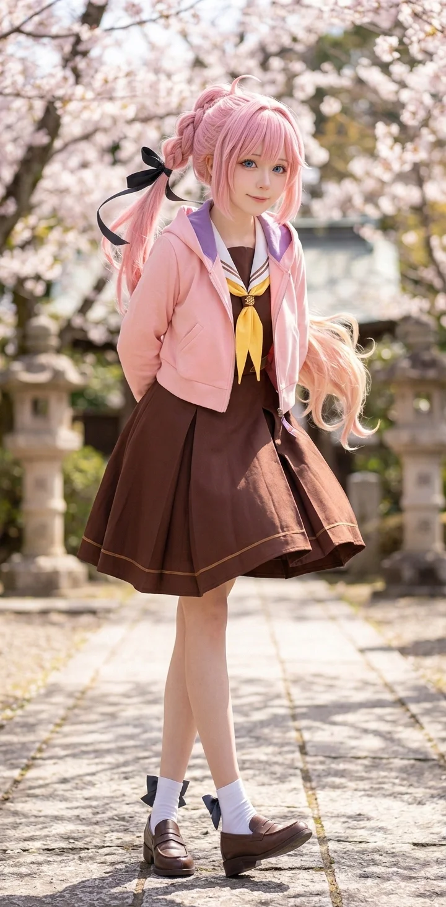

효빈광역시를 무대로 활동하는 현역 인디·세미프로게이머 겸 버튜버(‘츠쿠시’)이자, 효빈대학교 게임산업학과 수석 장학생. 당가동 서브컬처 파티(임은혜, 유리내, 백모모)의 실질적인 브레인이자 멘탈 지주이다. 하스노소라 여학원 스쿨 아이돌 클럽의 안요지 히메를 영혼까지 바쳐 모시는 진성 오시이며, 원작의 히메처럼 ‘루리메구(루리노×메구미)’와 스쿨 아이돌을 미친 듯이 열정적으로 파는 중증 덕후다.
단순한 팬심을 넘어서 이름(安+히메)부터 생일, 특유의 느긋하고 몽글몽글하게 녹아내리는 듯한 독특한 마시멜로 목소리, 그리고 극단적으로 암울했던 과거사와 ‘언니가 사준 컴퓨터와 온라인 게임을 통해 세상과 소통하고 친구를 사귀게 되었다’는 서사까지 안요지 히메와 소름 돋는 100% 완벽한 평행이론을 자랑하는 인물이다. 다섯 살이던 2011년 여름 폭우 산사태로 부모님(안태식·최미경)을 동시에 잃고, 조부모님마저 돌아가시거나 연락이 두절된 절망 속에서 14살 터울의 친언니 안여왕(1992년생)의 피눈물 나는 희생과 박효빈 시장이 관여한 희아복지재단의 전폭적인 지원을 받으며 자랐다.
이성적이고 분석적인 두뇌를 지녔지만 결코 겉으로 차갑거나 날이 서 있는 성격이 아니며, 오히려 겉모습부터 말투, 분위기까지 원작의 안요지 히메처럼 한없이 ‘푹신푹신하고 포근하며 말랑말랑한 느낌’이 강한 소녀다. 다섯 살 때 부모님을 일찍 여읜 아픔 때문에 정신적으로 일찌감치 성숙해져 남의 상처를 누구보다 깊이 헤아리는 극도로 착하고 온화한 성품을 지녔다. 남의 취향을 무시하던 임은혜의 폭언 속에서도 그녀의 속사정(어머니 연월엽의 세뇌와 고립감)을 가장 먼저 꿰뚫어 보고 용서해 주었으며, 한국 프로게이머 판이 워낙 고인물 천지라 대회 상금만으로는 고정 소득이 아쉬웠던 현실을 블루 버드 멘토단 유급 근로, 버튜버 활동, 주말 PC방 아르바이트로 극복하여 어릴 적 단칸방 시절보다 조금은 풍족해진 일상을 언니 부부 및 멘토단 동료들과 따뜻하게 나누고 있다.
2006년 4월 29일, 덕빈북도 군천시 을차면 희아리(인접 마을인 안양사리와 맞닿은 곳)에서 사과 과수원을 운영하던 아버지 안태식(安泰植, 1965년생) 씨와 어머니 최미경(崔美京, 1967년생) 여사의 늦둥이 둘째 딸로 태어났다. 소름 돋게도 이 출생지는 훗날 '안양사리(安養寺里)'와 '희아리(姫芽里)'가 결합되어 안요지 히메(安養寺 姫芽)의 한자와 토씨 하나 틀리지 않고 완벽히 겹치는 지명 덕분에 오타쿠들의 필수 성지순례 코스로 급부상한 곳이다.
아버지 안태식 씨는 1992년에 낳은 첫째 딸에게는 "세상을 호령하는 여왕처럼 당당하게 살라"며 ‘안여왕(安女王)’이라는 이름을, 그리고 무려 14년 만인 2006년에 마흔이 넘어 얻은 늦둥이 둘째 딸에게는 "우리 집안의 영원한 막내 공주님으로 사랑받으며 살라"며 ‘안공주(安公主)’라는 이름을 지어줄 만큼 가족 사랑이 지극한 가장이었다.
그러나 공주가 다섯 살이던 2011년 7월 여름, 기록적인 집중호우가 군천시 일대를 덮치면서 가문의 모든 행복이 한순간에 산산조각 났다.
폭우 속에서 과수원 배수로가 막혀 나무들이 쓸려 내려갈 위기에 처하자 비옷을 입고 뒷산 배수로를 정비하러 나갔던 아버지 안태식(당시 향년 46세) 씨와 어머니 최미경(향년 44세) 여사가, 갑작스럽게 무너져 내린 대규모 산사태 토사에 휩쓸려 두 분 모두 현장에서 숨진 채 발견된 것이다.
부모님의 장례를 치른 직후 친할머니 박순분(1941~2012) 여사는 아들 부부를 앞세운 충격으로 쓰러져 이듬해 세상을 떠나셨고, 친할아버지 안병구(1938~2014) 옹마저 중증 치매가 발병해 노인요양원에 입소하신 뒤 2014년 별세하셨다. 유일하게 남은 외조부모(외할아버지 최만복·1940년생, 외할머니 이춘자·1943년생)는 이미 오래전 사업 실패와 빚보증 문제로 야반도주하여 생사조차 알 수 없는 행방불명 상태였고, 설상가상으로 먼 친척들이라는 작자들은 미성년자인 공주와 갓 스무 살이 된 언니 안여왕을 돌보기는커녕 부모님의 사망보험금과 무너진 과수원 땅 보상금만 가로채려 하이에나처럼 달려들었다.
결국 스무 살의 큰언니 안여왕은 동생 공주를 지키기 위해 남은 소액의 보상금만 챙겨 친척들과의 연을 완전히 끊고, 공주가 을차초등학교 1학년에 입학한 직후인 2013년 봄 효빈광역시 안천구 하가동의 외풍이 심하게 부는 비좁고 낡은 1DK(방 1개+부엌 1개) 반지하 단칸방으로 야반도주하듯 이주했다.
세상에 오직 둘만 남겨진 자매. 여덟 살의 안공주를 거두어 키운 것은 부모님을 대신해 어머니가 되어준 14살 터울의 친언니 안여왕(1992년 9월 24일생 — 놀랍게도 언니의 생일이 바로 원작 안요지 히메의 실제 생일인 9월 24일이다!)이었다.
원래 대학에 진학해 사회복지사가 되고 싶어 했던 스물한 살의 언니 안여왕은, 동생 공주의 학비와 단칸방 월세를 벌기 위해 대학 입학을 미루고 자신의 찬란한 20대 초반 청춘을 송두리째 갈아 넣었다. 낮에는 안천구 평전공단 부품 공장에서 2교대 근무를 뛰고, 밤에는 편의점과 식당 설거지 아르바이트를 전전하며 손마디가 다 부르트도록 일했다.
당시 하가초등학교로 전학을 온 여덟 살 공주는, 부모님이 안 계시고 단칸방에 산다는 사실에 극도로 위축되어 학교에서 친구 한 명 사귀지 못하고 말수를 잃은 채 겉돌았다. 방과 후 아무도 없는 차갑고 어두운 1DK 단칸방에 돌아와, 언니가 야간 알바를 마치고 돌아오는 새벽 1시까지 이불을 뒤집어쓰고 혼자 덜덜 떨며 우는 것이 어린 공주의 일상이었다.
그리고 세월이 흘러 2024년 봄, 《러브라이브! 하스노소라 여학원 스쿨 아이돌 클럽》에 104기 신입생으로 안요지 히메(安養寺 姫芽)가 등장했을 때, 안공주는 캐릭터의 공식 설정과 활동 기록(스토리)을 읽다가 그 자리에서 스마트폰을 붙잡고 1시간 동안 폭풍 오열을 터뜨렸다!
이름(安+공주=안요지 히메), 고향 지명(안양사리·희아리), 뒤집힌 생일(0429 ↔ 0924, 심지어 언니 안여왕의 실제 생일이 9월 24일!)이 일치하는 것을 넘어, 원작의 안요지 히메 역시 ‘어린 시절 주변과 어울리지 못하고 혼자 지내던 자신을 불쌍히 여긴 언니가 컴퓨터와 게임을 사주었고, 그 게임을 통해 온라인에서 친구들을 사귀며 세상과 연결되어 학생 대회 우승급 게이머가 되었다’는, 자신의 어린 시절을 토씨 하나 틀리지 않고 그대로 옮겨놓은 듯한 눈물겨운 서사를 가지고 있었기 때문이다! (상세 내용은 하단 8.2절 참조)
효빈시 안천구의 하가초등학교로 전학을 온 후 언니가 사준 중고 PC로 재능을 키우던 안공주는, 마침 안천구 일대에서 소외 계층 아동을 적극적으로 발굴하고 지원하던 희아복지재단(훗날 박효빈 시장이 전폭 지원하는 복지재단)의 눈에 띄게 된다. 재단은 고무 지역아동센터 등을 통해 공주의 천재성을 알아보고 최신 게이밍 PC와 초고속 인터넷(Wi-Fi 6E) 인프라, 그리고 언니 안여왕을 위한 청년 자립 장학금까지 빵빵하게 제공했다.
단순한 취미를 넘어 재단의 전폭적인 인프라 지원을 스펀지처럼 흡수한 그녀는 천재적인 게임 재능(특히 FPS 장르의 에임과 동체시력, 상황 판단력)을 폭발적으로 꽃피웠다. 중고등학교 시절 각종 아마추어·학생 대회를 휩쓸고 세미프로·인디 프로게이머 및 스트리머로 데뷔하며 재단 내에서는 "희아복지재단이 길러낸 최고의 자랑이자 역사상 가장 완벽한 아웃풋"으로 불리게 된다.
하가초등학교를 졸업하고 진학한 당가중학교에서 임은혜, 유리내, 백모모를 만나 운명적인 단짝 친구가 된다. 2019년 1학년 당시, 은혜가 어머니(연월엽)의 지독한 혐덕(오타쿠 혐오) 세뇌 교육을 받고 자란 상태라는 것을 빠르게 눈치챈 공주는, 자신의 짙은 덕력과 게임 과몰입 성향을 철저히 숨긴 채 "난 주말에 인스타 감성 카페 가서 예쁜 사진 찍는 거 좋아해~"라며 완벽한 '일코(일반인 코스프레)'를 시전해 아슬아슬한 우정을 이어갔다.
그러나 2021년 3학년 가을, 코로나19 비대면 수업이 한창이던 시기에 끔찍한 대형 사고가 터졌다. 아침 1교시 온라인 클래스 줌(Zoom) 링크를 묻는 단톡방에, 안공주가 탭을 여러 개 띄워놓고 가챠를 돌리며 덕질을 하다가 뇌정지가 와서 '역대급 3D 미소녀 라이브 무대 모음zip' 유튜브 링크를 복사+붙여넣기 해버린 것이다. 이 미친 오발송 사태로 인해 3년간의 치밀했던 일코는 1초 만에 박살 났고, 배신감에 혐덕 스위치가 단단히 눌린 임은혜로부터 "냄새나는 병균 쓰레기들! 엄마가 니들이랑 놀지 말랬어!"라는 폭언을 들으며 파국을 맞이하게 된다.
이때 공주는 같이 화를 내며 싸우기보다 특유의 몽글몽글하고 조용한 어조로 "너네 어머니 교육관이 참 힘들겠다... 일단은 게임 오버 칠 테니까 알아서 잘 지내..."라며 이성적으로 거리를 두었다.
절교 상태였지만, 어릴 적부터 정신적으로 성숙했던 안공주는 내심 '은혜의 저 엇나간 혐오 발언은 본인 의지가 아니라, 가정환경이 만든 슬픈 버그(Bug)일 뿐이다'라는 것을 일찌감치 꿰뚫어 보고 있었다. 틈만 나면 은혜가 교실 뒤에서 혼자 몰래 우는 모습을 보며 마음 아파하기도 했다.
2023년 초, 은혜가 혐덕 일진 무리와 손절하는 과정에서 으슥한 골목길로 끌려가 "나랑 한 번 하고 가 씨발련아"라는 끔찍한 성적 협박을 당하는 현장을 우연히 목격했다. 안공주는 가장 먼저 나서서 막으려 했으나, '160cm대 여고생 셋 vs 180cm대 불량 남학생 다섯'이라는 구도에서 승률이 0%에 수렴한다는 것을 즉시 계산(게이머 특유의 뇌지컬)해냈다. 그녀는 당황하지 않고 주변을 탐색하여, 마침 PC방에서 나오던 압도적 피지컬의 'Aqours(아쿠아) 오시 어벤져스 5인방(도선요, 이리자, 송과영 등)'을 포착했다. 공주는 즉시 그들에게 달려가 "저기요오~ 아쿠아 오시면 불의를 못 참으시지 않나요~? 제 친구가 위험한데 탱커 좀 서주세요오~..."라며 핑을 찍어 어벤져스를 현장으로 소환했고, 쓰레기 일진들을 물리력으로 완벽하게 제압해 은혜를 지옥에서 구출해 냈다.
이 과정에서 빡친 백모모가 일진들을 향해 엄청난 사자후를 갈길 때, 다리가 풀려 주저앉아 덜덜 떨며 오열하던 은혜를 자신의 포근한 후드 집업 품에 조용히 안아주며 등을 토닥여준 것도 공주였다.
이 구출 사건 직후 뼈저리게 회개한 임은혜가 당가고등학교 교실 복도에서 완벽한 도게자를 시전했다. 은혜는 아버지 선물을 사고 남은 알바비를 영혼까지 탈탈 털어 새벽 애니플러스 샵 이틀 노숙 오픈런으로 구해온 '안요지 히메 한정판 아크릴 디오라마'를 공주에게 덜덜 떨며 바치고 통곡했다.
안공주는 은혜의 처절한 정성과 피눈물 나는 참회에 포근하게 웃음을 터뜨리며, "싹싹 비는 모양새가 불쌍하기도 하고 귀엽기도 해서 공주가 쿨하게 봐준다아~ 대신 앞으로 굿즈 사러 갈 때 우리 짐꾼은 평생 은혜 너다~?"라며 대인배적인 성격으로 가장 먼저 화해를 받아주었다. 이후 파티의 영원한 멘탈 지주로서 백치미 넘치는 은혜를 옆에서 알뜰히 챙겨주고 있다.
그녀의 이름 '안(安)공주'는 안요지 히메의 성씨인 '안(安)'과 히메(姫)의 한국어 뜻인 '공주'가 합쳐진, 그야말로 우주가 점지해 준 완벽한 네이밍이다.
재미있는 점은 하필 성씨가 부정문을 뜻하는 '안(安)'씨라서, 어릴 적에는 짓궂은 남자애들에게 "너는 공주가 아니야! (안+공주)"라며 놀림을 받기도 했다는 것이다. (심지어 언니 이름은 '안여왕'이라 자매가 나란히 "여왕도 아니고 공주도 아니다!"라고 놀림받았다.) 물론 정신적으로 성숙한 현재는 이런 유치한 초딩급 놀림 따위 1도 신경 쓰지 않으며, 오직 '안요지 히메'와의 평행이론 연결고리로만 여기며 오히려 자랑스러워하고 있다.
게다가 생일은 4월 29일로, 안요지 히메의 생일(9월 24일)을 거울처럼 정확히 뒤집어 놓은 날짜다. (이 완벽한 평행이론 때문에 은혜가 "나랑 똑같이 생일 거울 대칭이네!!"라며 더 소름 돋아 했다.)
외모 역시 히메와 판박이다. 머리 색깔이 검은색(흑발)이라는 점만 제외하면, 특유의 긴 포니테일/트윈테일 스타일링, 화장법, 심지어 펑퍼짐하고 푹신해 보이는 후드 자켓을 즐겨 입는 패션 센스까지 히메를 그대로 복사해 놓은 듯하다. 체형마저 비슷하여 효빈 애니메이션 페스티벌(HAF) 등 행사장에서 '흑발 버전 안요지 히메'로 코스프레를 하면 200%의 싱크로율을 자랑하며 엄청난 셔터 세례를 받는다. 은혜(현실판 메구미), 유리내(현실판 루리노)와 함께 다니면 진짜 미라쿠라파크! 트리오가 현실에 강림한 것 같은 착각을 준다.
안공주를 처음 만나는 사람이나 그녀의 버튜버(‘츠쿠시’)·치지직 방송을 처음 켜는 시청자들이 가장 먼저 심장을 부여잡는 포인트는 바로 그녀의 매우 특이하고 독보적인 목소리와 푹신푹신한 분위기다. 별도의 발성 연기나 흉내를 내는 것이 아님에도, 선천적인 성대 구조와 비강 공명이 원작 안요지 히메(CV. 쿠루스 린)의 목소리와 소름 끼칠 정도로 똑같은 ‘느긋하고 몽글몽글하게 녹아내리는 마시멜로 톤’을 띠고 있다!(...)
특히 흔히 ‘이성적인 지능캐·프로게이머’라고 하면 겉으로 차갑거나 까칠할 것이라는 편견을 갖기 쉽지만, 안공주는 겉모습과 평소 태도 자체도 전혀 차갑지 않고 원작의 안요지 히메처럼 한없이 ‘푹신푹신하고 말랑말랑하며 포근한(ふわふわ) 느낌’이 강한 치유계 소녀다. 루즈핏 니트나 큼지막한 후드티 속에 파묻혀 반쯤 감긴 순한 눈매로 헤실헤실 웃으며 "으응~ 공주는 지금 졸려서 마나 부족이거든~...", "저기이~ 거기 연막 깔면 시야 가려져서 조금 아플 텐데에~..."라며 말끝을 둥글고 느릿하게 늘리는 몽글몽글한 말투를 구사한다.
논리적인 팩트 폭격을 날릴 때조차 공격적이거나 날 선 어조가 아니라, 마치 따뜻한 솜이불을 덮어주며 조근조근 타이르는 듯한 포근한 마시멜로 보이스로 말하기 때문에, 팩폭을 맞은 상대방(임은혜나 마루빈 등)조차 화를 내기는커녕 "어라...? 왜 뼈는 맞았는데 기분은 말랑말랑하고 포근하지...?"라며 무장 해제되어 버린다. 대원방송 성우인 최후영조차 공주의 목소리와 분위기를 보고 "성우 학원에서도 인위적으로는 절대 못 만드는 천연 마시멜로 성대이자 인간 수면제급 포근함"이라며 극찬을 아끼지 않았다.
평소에는 이토록 느긋하고 푹신푹신한 마시멜로 상태인 안공주가, 단 두 가지 순간에 안요지 히메 특유의 ‘숨 가쁜 열혈 하이텐션 오타쿠 모드’로 급발진한다. 하나는 게임에서 클러치 각이 보일 때이고, 다른 하나는 바로 ‘덕질(특히 최애 안요지 히메 및 루리메구 컵링)’ 주제가 나왔을 때다!(...)
원작의 안요지 히메가 하스노소라 입학 전부터 스쿨 아이돌 클럽, 그중에서도 ‘루리메구(오사와 루리노 × 후지시마 메구미)’의 광적인 강성 오타쿠로서 두 선배 앞에서는 주접과 과호흡을 주체하지 못하듯, 현실의 안공주 역시 원작의 루리메구 컵링은 물론 자신의 눈앞에 살아 움직이는 현실판 루리노(유리내)와 현실판 메구미(임은혜)가 투닥거리는 모습만 봐도 오타쿠 유전자가 대폭발한다!
안공주의 내면은 동세대 유니버스 인물들 중 가장 착하고 따뜻하며 정신적으로 깊이 성숙한 어른에 가깝다. 다섯 살이라는 어린 나이에 산사태로 부모님을 잃고, 스무 살 언니 안여왕이 자신 때문에 공장 작업복에 기름때를 묻히며 눈물짓는 모습을 보며 1DK 반지하 단칸방에서 일찌감치 철이 들었기 때문이다. "내가 투정을 부리거나 엇나가면 세상에서 유일한 내 편인 언니가 무너진다"는 생각에 여덟 살 때부터 스스로 감정을 추스르고 남의 아픔을 먼저 살피는 법을 배웠다.
체력이 약해 방전되는 유리내를 위해 가방에 늘 포도당 캔디와 초코우유를 챙겨 다니고, 소심한 가희나가 기죽지 않게 뒤에서 몰래 기프티콘을 챙겨주며, 블루 버드 멘토단의 아픈 손가락인 조유진과 고노애가 야근할 때면 말없이 옆자리에 남아서 행정 매크로를 짜주며 퇴근 시간을 앞당겨 준다. 생색내는 것을 부끄러워해 늘 "그냥 동선 겹쳐서 한 거야~ 헤헤~"라며 포근하고 몽글몽글한 미소로 둘러대지만, 주변 사람들은 모두 공주가 얼마나 착하고 속이 깊은 아이인지 알고 있다.
게임을 병적으로 좋아하고 엄청나게 잘하여 현재 FPS 종목(발로란트, 에이펙스 레전드 등) 선수 및 스트리머로 활약 중이다. 놀라운 점은 게임으로 단련된 뇌지컬(상황 분석력, 자원 관리, 맵 리딩, 효율성 계산)이 학업에도 그대로 적용된다는 점이다.
멍청함의 극치를 달리는 은혜나, 툭하면 체력이 방전되어 퍼지는 유리내, 감성적인 백모모와 달리 안공주는 4인방 파티 중에서 압도적으로 공부를 제일 잘하는 지능캐(브레인 포지션)이다. 머리가 워낙 비상하여 적은 시간을 투자하고도 핵심만 파악해 시험에서 고득점을 쓸어 담는 효율의 극치를 보여주며, 현재 효빈광역시의 명문 효빈대학교 정보통신대학 게임산업학과에 당당히 수석 장학생으로 진학해 재학 중이다.
게임하는 시간(그리고 덕질과 알바하는 시간)을 단 1초라도 더 확보하기 위해, 식사 시간을 극단적으로 단축하는 '빨리 먹기' 스킬이 타의 추종을 불허한다. 라면 한 그릇을 씹지도 않고 마시듯 해치우고, 햄버거 세트를 3분 만에 분쇄해 버리는 먹방의 달인이다. 어릴 적 가난한 1DK 시절 언니가 바쁠 때 혼자 대충 끼니를 빨리 때우고 컴퓨터 앞에 앉던 서글픈 생존 습관이 굳어진 것이기도 하다. (물론 지금은 임은혜가 굽신거리며 사다 바치는 리에라몰 VIP 타코야키를 10초 컷으로 조지는 데 유용하게 쓰인다.)
안공주가 천재적인 FPS 실력을 가진 것은 사실이지만, 현실의 대한민국 프로게이머 업계는 전 세계에서 가장 피도 눈물도 없는 ‘초고인물 정글’이다(...). 게다가 공주는 효빈대학교 게임산업학과 학업을 병행해야 하는 대학생 신분이라 서울의 대기업 프랜차이즈 1군 합숙 구단에 전업으로 들어갈 수 없었고, 인디·세미프로 구단 소속으로 오픈 토너먼트나 서드파티 대회에 출전하는 방식을 택했다. 이 때문에 대회 상금은 분기별로 한 번씩 입상할 때나 타는 ‘가끔 들어오는 비정기 보너스’ 개념이어서, 상금만으로는 매달 고정적인 생활비와 덕질 자금을 충당하기에 약간 아쉬운 수준이었다.
그러나 억척스럽고 성숙한 스무 살 소녀 안공주는 좌절하는 대신, 자신의 특기를 살린 3대 고정 소득 파이프라인을 구축하여 어릴 적 찢어지게 가난했던 1DK 단칸방 시절과 비교하면 ‘꽤나 따뜻하고 조금은 풍족해진 소박한 행복’을 스스로의 힘으로 일궈냈다!
2025년, 안공주는 14살 터울 언니의 희생에 보답하고 안정적인 고정 소득과 실무 스펙을 쌓기 위해 효빈시 간판 청년 정책인 블루 버드 멘토단에 대학생 멘토(실무 및 교육지원 복합 트랙)로 지원하여 당당히 합격했다. 그녀는 효빈시청 미디어 기획 부서 실무와 관내 지역아동센터 초·중·고 멘티 코딩·e스포츠 교육에 배치되어 맹활약했다.
여기서도 공주의 천재성은 빛을 발했다. 공주는 현역 게이머 특유의 엄청난 손놀림(APM)과 전략적 뇌지컬을 활용하여, 비효율적이던 시청 미디어 부서의 행정 데이터 처리 및 편집 워크플로우를 게임 매크로 짜듯 완벽하게 최적화시켜버렸다. 업무 효율을 300% 이상 끌어올린 공주의 능력에 담당 주무관들이 혀를 내둘렀다는 훈훈한 일화가 전해진다.
2026년 가을, 선거에서 3연속 3등으로 낙선하고 분노 조절에 실패한 국민의힘 재진숙 당협위원장이 행사에 무단 난입해 블루 버드 멘토단 강사들에게 깽판을 치는 사건이 발생했다. 이때 미디어 기획 대학생 멘토이자 프로게이머인 안공주, 그리고 현역 간호사인 이리자 등을 발견한 재진숙은 다음과 같은 3대 망언을 연달아 쏟아내며 선을 넘는 광역 도발을 시전했다.
이 폭언을 듣고 곁에 있던 임은혜가 분노로 이성을 잃고 라이브를 켜려 하자, 안공주는 은혜의 손을 조용히 내리눌렀다. 그리고 과거 이명박·박근혜 정부 시절 '셧다운제'에 열렬히 찬성했던 재진숙의 구태의연한 과거를 이미 완벽하게 데이터베이스화해 두고 있던 공주는, 특유의 푹신푹신하고 느긋한 표정으로 스마트폰을 꺼내 통계청 및 시청 재무 데이터를 띄워 재진숙의 눈앞에 들이밀며 몽글몽글한 마시멜로 목소리로 조근조근 팩트를 읊었다.
여기에 간호원 비하 발언에 뚜껑이 열린 이리자가 나서서 "어르신, 치매 초기가 의심되시는데 병원 오셔도 제 쾌감펀치 맞으실 줄 아세요"라며 살벌한 의료인 팩폭을 날렸고, 뒤이어 오동령의 스쿼트 드립 물리 폭격이 쏟아졌다. 결국 포근한 목소리로 뼈를 갈아버리는 공주의 데이터 팩폭과 물리력의 환장할 콜라보에 영혼까지 탈탈 털린 재진숙은 단 한마디도 반박하지 못하고 식은땀을 흘리며 행사장에서 빤스런을 치고 말았다.
이 사이다 영상이 퍼지자 네티즌들은 "효빈교통공사를 영업이익 1조 원짜리 대기업으로 만들어준 효자 게임을 쓰레기 취급하는 3등 낙선녀 ㅋㅋㅋ", "셧다운제 세대가 어디 2026년 멘토단 앞에서 훈수를 둠?", "안공주 몽글몽글하고 포근한 목소리로 딜미터기 터뜨리는 거 중독성 미쳤다" 라며 재진숙을 완벽하게 조리돌림하며 사회적으로 매장시켰다.
당가중학교 시절 '줌 링크 대참사' 때 임은혜에게 벼락같은 일침을 날려준 가노은의 올곧은 강단을 매우 높게 평가한다. 현재는 같은 효빈대학교(노은은 음악학과, 공주는 게임산업학과)에 나란히 재학 중인 동문으로서 끈끈한 관계를 유지 중이다. 안공주가 푹신하고 논리적인 분석으로 상황을 정리하면 노은이 특유의 친화력과 하이텐션으로 분위기를 띄우는, 파티 내의 완벽한 '두뇌(공주)'와 '심장(노은)'의 시너지 조합을 보여준다. 특히 자본주의 엘튜버 오낙희가 노은의 천재 보컬을 편의점 햄버거 하나로 무급 착취하려 했을 때, 공주가 등판해 근로기준법 조항을 조근조근 읊어 노은의 정당한 일당을 받아낸 일화는 전설이다.
효빈대 음악학과 동문인 마루빈과도 자주 마주친다. 게임 분석력 만렙인 안공주의 눈에, 마루빈 특유의 "이미와칸나이!" 같은 츤데레 패턴은 그저 '매우 읽기 쉬운 귀여운 보스 몬스터 알고리즘'에 불과하다. 캠퍼스에서 마루빈이 가노은에게 집착하며 소리를 지를 때마다, 공주가 폭신한 후드티를 입고 스윽 다가와 "루빈 아가씨~ 오늘은 어그로 핑퐁 패턴이 너무 귀여운데요~? 가노은 앞에서는 방어력 0 되는 거 다 보이거든~ 헤헤..."라며 몽글몽글한 목소리로 놀려먹어 루빈의 얼굴을 홍당무로 만들어버린다.
'줌 링크 대참사' 당시, 잔뜩 겁을 먹고 덜덜 떨면서도 끝까지 자신들을 모욕하지 말라며 임은혜를 막아섰던 가희나의 용기를 매우 기특하고 귀엽게 여긴다. 공주는 희나를 마치 지켜줘야 할 '초보 뉴비'나 작은 소동물처럼 각별히 챙긴다. 멘탈이 여린 희나가 해천대 간호학과 실습으로 방전되어 앓는 소리를 할 때마다, 버튜버 도네 정산금이나 PC방 알바비로 산 간식 기프티콘과 비타민을 포근한 미소와 함께 챙겨주는 다정한 언니 같은 포지션이다.
돈을 밝히는 자본주의 엘튜버 오낙희(나츠미 모티브)와는 유쾌한 '비즈니스 밀당 관계'를 이룬다. 낙희는 안공주가 인기 버튜버(‘츠쿠시’)이자 고인물 게이머라는 점을 이용해 자신의 유튜브 채널에 공주를 무료 게스트로 불러 조회수를 빨아먹으려 호시탐탐 기회를 노린다.
하지만 어릴 적부터 생활력 만렙으로 자란 공주는 절대 호락호락하게 당하지 않는다. 낙희가 "공주 쨩! 듀오 합방 한 번만 해주라 데스노~ 떡볶이 사줄게!"라고 들이대면, 공주는 포근하게 웃으면서도 스마트폰으로 엑셀 스프레드시트를 켜며 몽글몽글하게 응수한다. "으응~ 낙희 언니이~ 공주 버튜버 시간당 도네 수익이 얼마인지 알지이~? 떡볶이로는 단가 계산이 안 맞거든~ 정산 비율 7대 3에 편집비는 언니가 부담하는 조건이면 같이 놀아줄게에~" 말랑말랑한 목소리로 완벽한 단가 협상을 해내는 공주 앞에서 낙희는 매번 백기를 든다.
효율과 데이터를 신봉하는 오마리(토마리 모티브)와는 그야말로 '최상위권 지능캐들의 만남'이다. 멍청한 임은혜나 감성적인 백모모 사이에서 고통받던 공주는, 말 한마디만 해도 통계와 승률로 대화가 통하는 마리를 만나자마자 엄청난 내적 친밀감을 형성했다.
둘이 만나면 "이번 대회 메타에서 해당 요원의 승률 기댓값은 68%로 수렴합니다(마리)", "으응~ 맞아아~ 그러니까 B사이트 러시 인원 배분을 3:2로 쪼개는 게 동선 낭비가 없지이~(공주)"라며 일반인(임은혜)은 알아들을 수 없는 외계어 같은 데이터 분석 대화를 나눈다. 그러다 공주가 갑자기 "근데 마리야아~ 루리메구 커플링의 백합 시너지 기댓값은 1000%로 수렴하는 거 알지이~?!"라며 급발진 덕질 토크를 시작하면, 효율 AI 오마리조차 공주의 열정에 말려들어 진지하게 백합 시너지 그래프를 분석하기 시작하는 환장의 콤비다.
비극적인 가족사 속에서 서로의 유일한 생명줄이 되어 살아남은 안공주네 자매의 서사는 효빈시와 군천시 주민들의 눈시울을 적시는 감동 실화다.
안공주에게 언니 안여왕(1992년생)은 친언니이자 동시에 ‘나를 낳아준 것이나 다름없는 어머니이자 생명의 은인’이다. 스무 살 꽃다운 나이에 산사태로 부모님을 잃고 친척들에게마저 외면당했을 때, 여왕은 다섯 살~일곱 살짜리 어린 동생 공주를 보육원에 보내지 않기 위해 자신의 대학 진학을 포기하고 안천구 하가동의 1DK 반지하 단칸방에서 공장 2교대 근무와 야간 편의점 알바를 뛰며 동생을 홀로 키워냈다.
특히 혼자 방에 남겨진 동생이 외로움에 마음의 병을 얻을까 봐, 한겨울 동상 걸린 손으로 벌어온 돈으로 15만 원짜리 중고 컴퓨터를 사주어 공주가 온라인 게임을 통해 세상과 소통하고 게이머·버튜버로 성장할 수 있는 결정적 발판을 마련해 주었다. 소름 돋게도 언니 안여왕의 실제 생일(9월 24일)이 원작 안요지 히메의 공식 생일(9월 24일)과 100% 일치하여, 공주는 "히메 쨩은 나 자신이자 동시에 나를 구원해 준 우리 언니의 화신"이라고 여긴다.
이후 공주가 희아복지재단의 장학생으로 선발되어 부담을 덜게 되자, 언니 여왕도 야간 대학 사회복지학과를 졸업하고 현재는 자신들 자매를 살려주었던 바로 그 ‘희아복지재단’의 주임 사회복지사로 입사해 제2의 안공주 같은 고아·한부모 아동들을 구제하는 성녀(聖女)로 일하고 있다.
언니 안여왕이 스물일곱 살이던 2019년, 마침내 언니의 아픔과 헌신을 진심으로 존경하고 감싸 안아준 좋은 사람 강민호(1990년생, 현 효빈교통공사 6호선 차량기지 기술직 대리)를 만나 결혼에 골인했다. 형부 강민호는 결혼 전부터 "여왕 씨에게 처제(안공주)는 동생이 아니라 딸 같은 존재인데, 당연히 우리 신혼집에 방 두 개 잡아서 처제 대학 졸업할 때까지 같이 살아야죠!"라며 먼저 손을 내밀어 준 대인배 중의 대인배다.
덕분에 공주는 중학교 1학년 때 지긋지긋한 1DK 단칸방을 탈출해 언니·형부의 따뜻한 신혼 아파트에서 본인만의 쾌적한 게이밍 룸을 갖게 되었고, 현재는 블루 버드 멘토단 월급과 버튜버 수익으로 매달 꼬박꼬박 언니 부부에게 생활비를 보태며 2022년 태어난 귀여운 조카 강하율(만 4세)의 장난감을 사다 바치는 중증 ‘조카 바보 이모’로 살아가고 있다.
고향 덕빈북도 군천시 을차면 희아리에서 사과 과수원을 가꾸시던 아버지 안태식 씨와 어머니 최미경 여사는, 비록 2011년 여름 폭우 산사태라는 비극으로 일찍 세상을 떠나셨지만 두 딸에게 ‘여왕’과 ‘공주’라는 세상에서 가장 귀한 이름과 강인한 유전자를 남겨주셨다. 친조부모(안병구·박순분)는 부모님 사망 직후 충격과 지병으로 잇달아 별세하셨고, 외조부모(최만복·이춘자)는 과거 보증 빚으로 야반도주해 현재까지 생사불명 상태다. 공주는 매년 4월 29일(본인 생일)과 9월 24일(언니 생일이자 히메 생일)마다 언니 부부와 함께 군천시 을차면 희아리(안양사리) 부모님 수목장을 찾아가 자신의 대회 트로피와 효빈대 수석 성적표를 바치며 인사를 올린다.
제19·20대 효빈광역시장인 박효빈(1996년생)과 안공주의 관계는 단순한 시장과 시민(멘토단 장학생)의 관계를 아득히 초월한 ‘생명의 은인이자 영혼의 안요지 히메 & 미라쿠라파크 성덕 동지’다.
우선 공적인 인연으로 볼 때, 박효빈 시장은 어린 시절 1DK 단칸방에 고립되어 있던 안공주·안여왕 자매를 발굴해 게이밍 PC와 장학금을 지원해 준 희아복지재단의 핵심 후원자이자 정책 설계자였으며, 스무 살의 안여왕이 동생을 돌보며 겪었던 ‘영케어러(가족돌봄청년)’의 고통을 누구보다 깊이 공감해 주었던 선배다. 또한 비정기적인 대회 상금만으로는 고정 수입이 아쉬웠던 공주가 대학 진학 후 매달 안정적인 고수익(생활임금 1.2배)을 벌며 실무 경력을 쌓을 수 있도록 블루 버드 멘토단을 창설해 준 장본인이기도 하다. 이 때문에 공주는 박효빈 시장을 진심으로 존경하고 따른다.
그러나 두 사람이 사석이나 서브컬처 행사장, 혹은 디스코드 음성 채널에서 마주치면 분위기는 급변한다. 박효빈 시장의 《러브라이브! 하스노소라 여학원 스쿨 아이돌 클럽》 최고 최애(Oshi) 캐릭터가 바로 안공주의 모티브인 ‘안요지 히메’이기 때문이다!(...) 박 시장은 블루 버드 멘토단 면접장에서 이력서를 보고 들어온 안공주가 "안녕하세요오~ 효빈대 게임산업학과 안공주입니다아~..."라며 특유의 느긋하고 몽글몽글하며 푹신푹신한 마시멜로 보이스로 첫인사를 건네는 순간, "헉?! 히, 히메 쨩 본체가 왜 효빈시청에 계시죠?!"라며 시장의 체통도 잊고 자리에서 벌떡 일어나 동공 지진을 일으켰다.
특히 박효빈 시장은 고노애 독대 사건 때도 밝혔듯 ‘공직선거법 제113조(기부행위제한)’를 병적으로 철저하게 준수하는 원칙주의자여서, 아무리 자신이 아끼는 후배인 안공주라도 사비로 직접 밥(햄버거)을 사주거나 버튜버(‘츠쿠시’) 방송에 현금 도네이션(후원금)을 쏘는 등 선거법에 걸릴 여지가 있는 행위는 단 1원어치도 하지 않는다! 대신 박 시장은 법의 테두리 안에서 100% 합법적이고 창의적인 방식으로 공주를 열렬히 응원하고 있는데, ① 공주의 버튜버 방송 때마다 개인 부계정으로 조용히 접속해 ‘풀시청(시청 지속시간 견인) + 좋아요 광클 + 유튜브 알고리즘 떡상용 정성 댓글 10줄 달기’로 조회수를 올려주고, ② 특정 개인에게 음식물을 제공하는 기부행위를 피하기 위해 아예 ‘효빈시청 구내식당 주간 정규 식단표’에 모든 직원과 멘토단이 정당하게 식권으로 사 먹을 수 있는 ‘수제 패티 햄버거 세트 데이’를 고정 편성해 공주가 시청 근무 날마다 합법적으로 햄버거를 마음껏 먹을 수 있게 배려하며, ③ 효빈문화재단이나 효빈교통공사의 공식 게임 홍보 방송에 버튜버 ‘츠쿠시’를 정식 외주 용역으로 섭외하여(근로 및 광고 제공에 대한 정당한 대가 지급은 선거법상 완벽한 합법!) 공주가 당당하게 출연료 수입을 올릴 수 있도록 일거리를 연결해 주는 눈물겨운 ‘준법 성덕 연대’를 이어가고 있다.
2025년부터 블루 버드 멘토단의 에이스 대학생 멘토로 활동하면서, 멘토단 내부의 동료 대학생 멘토들 및 초빙 강사·직업멘토들과도 가족 같은 유대감을 쌓았다. 겉으로도 푹신푹신하고 포근하며 속은 누구보다 성숙하고 착한 안공주의 진가가 가장 잘 드러나는 관계망이다.

안공주가 현재 뛰어난 세미프로·인디 프로게이머 겸 인기 버튜버이자 효빈대학교 게임산업학과 수석 장학생이 될 수 있었던 모든 기적의 출발점은, 그녀가 여덟 살(초1)이던 2013년 12월 24일 크리스마스이브 밤의 그 좁고 추운 안천구 하가동 1DK 단칸방에 있었다.
2년 전인 2011년 산사태로 부모님을 잃고 고향 군천시를 떠나 안천구 하가초등학교로 전학 온 여덟 살 공주는, 학교 친구들이 "엄마 아빠가 데리러 오셨다!"며 손을 잡고 하교할 때마다 혼자 신발장 구석에 숨어 신발 코만 내려다보던 지독하게 외로운 아이였다. 설상가상으로 하필 이름이 ‘안공주’이다 보니 철없는 남자애들이 "야, 넌 옷도 거지 같은데 무슨 공주냐? 공주 아니다(안+공주) ㅋㅋ"라며 놀려대는 통에, 공주는 아예 입을 다물고 마음의 문을 닫아버렸다.
당시 스물한 살이던 14살 터울 친언니 안여왕(1992년생)은 동생의 기를 살려주려 낮에는 평전공단 전자부품 공장에서 납땜을 하고, 밤 10시부터 새벽 2시까지는 고깃집 불판 닦기 알바를 뛰었다. 언니가 새벽에 녹초가 되어 단칸방 문을 열고 들어오면, 보일러 기름값을 아끼려 난방도 켜지 않은 냉골 방 구석에서 여덟 살 공주가 언니의 패딩 점퍼를 뒤집어쓴 채 눈물 자국이 말라붙은 얼굴로 새우잠을 자고 있었다.
동생이 학교에서도 친구가 없고 집에서도 벽만 보고 앉아 우울증 초기 증세를 보이자, 언니 안여왕은 피눈물을 흘리며 결심했다. 언니는 한 달 동안 자신의 점심 식사비를 아껴 삼각김밥 하나로 버티고 야간 철야 특근을 자청해 현금 15만 원을 모았다.
그리고 함박눈이 쏟아지던 크리스마스이브 밤, 언니는 북구 남전동 중고 전자상가에서 15만 원을 주고 산 ‘케이스 옆판이 찌그러진 구형 코어2듀오 중고 본체와 무거운 CRT 모니터’를 수레에 싣고 2km 눈길을 직접 걸어 단칸방으로 끌고 왔다. 동상에 걸려 시뻘겋게 부어오른 손으로 선을 연결해 부팅 화면(윈도우 XP)을 띄운 언니가 공주를 끌어안으며 말했다.
"공주야, 언니가 맨날 일하느라 우리 공주 혼자 놔둬서 정말 미안해... 이제 이 컴퓨터로 재밌는 게임도 하고, 인터넷에서 좋은 친구들도 많이 사귀어 봐. 모니터 속 세상에서는 아무도 우리 공주를 혼자 두지 않을 거야!"
언니의 차가운 손등에 뜨거운 눈물을 떨군 여덟 살 공주는, 그날부터 그 낡은 컴퓨터로 무료 온라인 슈팅 게임과 협동 RPG에 접속했다. 프레임이 뚝뚝 끊기는 저사양 PC였음에도 공주의 타고난 동체시력과 천재적인 에임, 그리고 포근한 말투는 게임 속 유저들을 단숨에 매료시켰다.
인게임 채팅창과 음성 보이스를 통해 "우와, Tsukushi_An 님 오더 진짜 천재시네요!", "공주 님 목소리 너무 몽글몽글하고 귀여워요! 내일 학교 끝나고 또 같이 레이드 돌아요!"라며 얼굴도 나이도 모르는 온라인 친구들이 공주를 진심으로 환영해 주었다. 모니터 너머에서 건네받은 그 따뜻한 말 한마디들에 용기를 얻은 공주는, 마침내 세상 밖으로 걸어 나와 희아복지재단의 문을 두드리고 당가중학교에서 평생의 단짝들(임은혜·유리내·백모모)을 사귀게 되었다. 지금도 안공주의 게이밍 PC 바로 옆 선반에는, 더 이상 켜지지 않는 그 ‘15만 원짜리 찌그러진 중고 본체’가 가보 1호로 소중히 모셔져 있다.
2024년 봄, 《러브라이브! 하스노소라 여학원 스쿨 아이돌 클럽》에 104기 신입생으로 ‘안요지 히메(安養寺 姫芽)’가 추가되고 그녀의 개인 스토리(활동 기록)가 업데이트되던 날 밤, 안천구 당가동 안공주네 아파트에서는 자매가 부둥켜안고 통곡하는 역사적인 사건이 벌어졌다.
처음 안요지 히메의 프로필이 공개되었을 때만 해도, 안공주는 "우와아~ 성씨가 나랑 똑같은 안(安)씨에 이름이 히메(=공주)잖아! 심지어 내 고향 지명(안양사리+희아리 = 安養寺+姫芽)이랑 한자까지 100% 똑같고, 내 생일(4월 29일)을 거울로 뒤집은 9월 24일생(심지어 우리 친언니 안여왕의 실제 생일!)에 나처럼 FPS 게임 대회를 휩쓴 학생 게이머 겸 스트리머라고?! 이건 내 운명의 캐릭터다 헤헤~"라며 신기하고 유쾌한 마음으로 스토리를 열람하기 시작했다.
그러나 인게임 스토리 중반부, 안요지 히메가 왜 그토록 게임을 사랑하고 게임 속 세계를 소중히 여기게 되었는지에 대한 과거 회상 장면이 나오는 순간, 모니터를 바라보던 안공주의 얼굴에서 웃음기가 완전히 사라졌다.
화면 속의 안요지 히메는 이렇게 고백하고 있었다.
‘어린 시절, 주변 사람들과 잘 어울리지 못하고 혼자 고립되어 지내던 나를 걱정한 언니가 나에게 컴퓨터와 게임을 사주었다. 나는 그 게임을 통해 온라인에서 처음으로 친구들을 사귀고, 누군가와 함께 웃고 소통하는 즐거움을 알게 되었다. 그래서 나에게 게임은 단순한 놀이가 아니라 나를 세상과 이어준 가장 소중한 보물이다...’
그 대사를 읽는 순간, 안공주의 두 눈에서 굵은 눈물이 봇물 터지듯 쏟아져 내렸다.
2013년 겨울, 외풍이 불던 1DK 반지하 단칸방에서 동상에 걸린 손으로 15만 원짜리 중고 컴퓨터를 안고 들어와 "공주야, 이제 이 컴퓨터로 게임도 하고 친구들도 사귀어 봐, 언니가 외롭지 않게 해줄게!"라고 웃어주던 스물한 살 언니 안여왕의 얼굴이 화면 속 히메의 스토리와 100% 겹쳐진 것이다!
공주는 헤드셋을 벗어 던지고 거실로 뛰쳐나가, 마침 조카 하율이를 재우고 나오던 서른두 살의 언니 안여왕의 허리를 와락 끌어안고 어린아이처럼 목을 놓아 대성통곡했다.
[안공주]: "언니이이이!! 흐어어엉 ㅠㅠㅠ 언니야아아!! 저기 게임에 나오는 안요지 히메라는 애가... 옛날에 혼자 외로워할 때 언니가 컴퓨터 사줘서 게임으로 친구 사귀고 행복해졌대...!! 꼭 옛날에 언니가 나한테 15만 원짜리 컴퓨터 사줬을 때랑 똑같아 ㅠㅠㅠ 언니가 그때 손 다 터지면서 사준 그 컴퓨터 없었으면 나 진짜 외로워서 죽었을 거야... 언니 고마워, 나 키워줘서 진짜 고마워 흐어어엉 ㅠㅠㅠ"
영문을 몰라 당황하던 언니 안여왕도, 동생 공주가 보여준 스마트폰 화면 속 히메의 사연을 읽고는 옛날 단칸방 시절의 서러움과 고생이 떠올라 동생을 끌어안고 함께 눈물을 쏟았다.
옆에서 이를 지켜보던 형부 강민호 대리까지 눈시울을 붉히며 "여보, 처제... 이제 우리 가족에겐 꽃길만 남았어!"라며 두 자매를 안아주었다. 그날 이후 안공주에게 안요지 히메는 단순한 최애 캐릭터를 넘어, 자신과 언니 안여왕이 걸어온 피눈물 나는 생존과 구원의 역사 그 자체를 상징하는 성물(聖物)이 되었다.
본문 여담에도 간략히 언급된 2019년 가을, 친언니 안여왕(당시 28세)과 형부 강민호(당시 30세)의 결혼식은 안천구 웨딩홀 하객 수백 명을 눈물바다로 만든 전설적인 사건이다.
당시 효빈교통공사 기술직에 합격한 성실한 청년 강민호는 희아복지재단 봉사활동에서 만난 안여왕의 고운 마음씨에 반해 구애를 펼쳤으나, 여왕은 "민호 씨, 저에게는 부모님 대신 키워야 하는 중학생 동생(공주)이 있어요. 제 월급은 동생 학비로 다 들어가서 결혼 자금도, 혼수도 한 푼 없는데 민호 씨에게 짐이 될 수 없어요"라며 눈물로 거절하려 했다.
이 대화를 방문 너머로 우연히 듣게 된 당시 당가중학교 1학년(14세) 안공주는 입술을 꽉 깨물었다. 스무 살부터 스물여덟 살까지, 화장품 하나 제대로 사 바르지 못하고 오직 자기만 바라보며 청춘을 바친 언니가 자기 때문에 사랑하는 사람과의 결혼까지 포기하려 한다는 것을 도저히 용납할 수 없었다.
그날부터 열네 살 중학생 안공주의 눈물겨운 ‘로컬 대회 상금 사냥(Prize Hunting)’이 시작되었다.
물론 한국 e스포츠 판이 워낙 고인물 천지라 중학생 신분으로 큰 프로 리그 상금을 매달 타낼 수는 없었지만, 공주는 희아복지재단 고무 지역아동센터의 PC 앞에 앉아 주말과 방학마다 열리는 전국의 동네 PC방 대회, 지자체 청소년 e스포츠 대회, 온라인 스트리머 멸망전에 ‘Tsukushi_An’이라는 닉네임으로 닥치는 대로 출전해 30만 원, 50만 원짜리 소액 상금과 문화상품권을 악착같이 긁어모았다!
그렇게 1년 넘게 모은 자잘한 대회 상금들과 희아복지재단 특별 재능 장학금을 단 100원도 쓰지 않고 차곡차곡 합친 공주는, 언니의 상견례 날 자신이 평생 모은 전 재산이 찍힌 예금 통장과 도장, 그리고 제주도 신혼여행 항공권 2매를 언니와 형부 앞에 두 손으로 공손히 내려놓았다!
[중1 안공주 (당시 14세)]: (몽글몽글하고 떨리는 목소리로) "언니이, 형부우... 이거 공주가 게임 대회 나가서 조금씩 타 온 상금이랑 장학금 다 모은 거거든... 아주 큰돈은 아니지만, 우리 언니 평생 공주 뒷바라지하느라 예쁜 옷 한 벌 못 입어봤잖아아... 이 돈으로 언니 사고 싶은 새 냉장고랑 세탁기 사고 신혼여행 다녀와아... 이 돈 안 쓰면 공주 진짜 울어버릴 거야아...!"
열네 살짜리 동생이 떡볶이 한 번 안 사 먹고 마우스를 쥐어뜯어 한 푼 두 푼 모아 온 피 같은 통장을 본 언니 안여왕은 그 자리에서 동생을 끌어안고 오열했고, 예비 형부 강민호 역시 무릎을 꿇고 "처제, 형부가 평생 우리 여왕이랑 처제 두 사람 호강시켜 줄게!!"라며 눈물을 훔쳤다.
결혼식 당일, 돌아가신 부모님을 대신해 신부 입장을 잡아줄 혼주가 없자, 당가중학교 교복을 단정하게 차려입은 열네 살 동생 안공주가 직접 신부인 언니 안여왕의 손을 잡고 버진로드를 함께 걸어 들어가 형부에게 언니의 손을 넘겨주었다! 그리고 하객석 맨 앞줄에서는 당시 ‘일반인 코스프레(일코)’ 시절이었음에도 의리로 총출동한 임은혜, 유리내, 백모모가 중학생 용돈을 탈탈 털어 만든 두툼한 축의금 봉투를 내고 손수건으로 눈물을 닦으며 물개박수를 쳤다. [2]
안공주 자매의 이름은 한번 들으면 절대 잊을 수 없는 ‘안여왕(언니, 1992년생)’과 ‘안공주(동생, 2006년생)’다. 어릴 적에는 성씨인 ‘안(安)’ 자가 한글 부정문(‘안 ~하다’)과 발음이 같다는 이유로 짓궂은 애들에게 "여왕도 아니고(안 여왕) 공주도 아니다(안 공주)!"라는 유치한 놀림을 받기도 했으나, 사실 이 이름에는 2011년 산사태로 돌아가신 아버지 안태식 씨와 어머니 최미경 여사의 눈물겨운 사랑이 담겨 있다.
아버지 안태식(1965년생) 씨는 원래 군천시 을차면 희아리에서 가난한 소작농의 아들로 태어나, 아내 최미경(1967년생) 여사와 함께 황무지 야산을 개간해 사과 과수원을 일군 자수성가형 농부였다. 두 분은 평생 흙먼지를 뒤집어쓰고 거친 노동을 하면서도, 자신들에게 태어난 두 딸만큼은 세상 그 누구에게도 기죽지 않고 가장 귀한 대접을 받으며 살기를 간절히 바랐다.
1992년 첫째 딸이 태어났을 때 면사무소 직원이 "안 씨 성에 여왕이라고 지으면 애가 놀림받지 않겠소?"라고 만류했으나, 아버지 안태식 씨는 호탕하게 웃으며 출생신고서에 한자로 ‘편안할 안(安), 계집 녀(女), 임금 왕(王)’을 힘주어 적었다.
"놀림은 무슨! 평화롭고 편안한(安) 세상의 여왕님(女王)이라는 뜻이오! 내 큰딸은 어디 가서든 여왕님처럼 당당하고 품위 있게 살 거요!"
그리고 14년 뒤인 2006년, 기적처럼 늦둥이 둘째 딸이 태어났을 때도 아버지는 망설임 없이 ‘편안할 안(安), 공변될 공(公), 주인 주(主)’를 적어 넣으며 "언니가 여왕님이니 동생은 당연히 공주님(公主)이어야지! 언니 여왕님이 동생 공주님을 평생 지켜주면 우리 집안은 두려울 게 없는 왕국이다!"라며 사과나무 아래서 덩실덩실 춤을 추셨다.
안타깝게도 2011년 여름 폭우 산사태 당시, 무너져 내리는 토사 속에서 아버지 안태식 씨가 어머니를 감싸 안으며 구조대원에게 남긴 마지막 유언 역시 "우리 집에 있는 내 여왕님(여왕이)이랑 내 작은 공주님(공주) 좀 제발 부탁합니다..."였다.
훗날 언니 안여왕으로부터 아버지의 이 작명 비화와 마지막 유언을 전해 들은 안공주는, 그날 이후 자신의 이름인 ‘안공주’를 세상에서 가장 자랑스러운 훈장으로 여기게 되었다. 현재 안공주가 버튜버 방송이나 대학 강의실에서 "제 이름이 왜 안공주냐면요오~ 돌아가신 우리 아버지가 저를 평생 포근한 공주님으로 살라고 지어주신 이름이고오, 실제로는 안요지 히메(姫=공주)의 운명을 타고났기 때문이거든요오~ 헤헤"라고 몽글몽글하게 밝힐 때마다 아무도 그녀의 이름을 가볍게 놀리지 못한다.
안공주(안요지 히메 오시 · 버튜버 ‘츠쿠시’)와 절친 임은혜(후지시마 메구미 오시)는 원작 하스노소라의 유닛 ‘미라쿠라파크!’의 현실판 조합으로, 은혜의 80만 구독자 채널 ‘은혜당’과 공주의 버튜버 채널에서 동시 송출하는 ‘히메×메구 듀오 FPS(발로란트/배틀그라운드) 랭크 게임 합동 방송’은 두 사람에게 쏠쏠한 도네이션 수익을 안겨주는 최고 인기 콘텐츠다.
문제는 두 사람의 게임 실력 격차가 ‘하늘과 땅(천상계 고인물 프로게이머 vs 심해 아이언 유인원)’ 수준이라는 점이다!(...)
방송이 시작되면 임은혜는 메구미 특유의 자신감만 하늘을 찔러서 "공주 쨩! 오늘은 이 큥눈나가 뒤에서 스나이퍼로 다 헤드샷 따줄 테니까 공주 쨩은 몸만 사려 큥~💖"이라며 호기롭게 가장 비싼 저격총(오퍼레이터)을 구매한다.
그러나 라운드가 시작된 지 5초 만에 은혜는 적의 연막탄 속에 혼자 돌진해 허공에 총알을 난사하다가 1초 만에 헤드샷을 맞고 전사하거나, 심지어 아군인 안공주의 발밑에 수류탄과 섬광탄을 까넣는 환장할 팀킬 트롤링을 시전한다!
전반전 12라운드 동안 임은혜가 기록한 전적은 경이로운 ‘0킬 12데스 0어시스트(평균 데미지 14)’.
은혜가 죽을 때마다 "꺄아아악!! 이거 핵(Hack) 아니야 큥?! 마우스 감도가 이상해 억까야!!"라며 의자에서 굴러떨어지면, 옆 화면의 안공주(버튜버 아바타 ‘츠쿠시’)는 화를 내기는커녕 특유의 푹신푹신하고 포근한 미소를 지으며 몽글몽글한 마시멜로 목소리로 조근조근 팩트를 읊는다.
[안공주]: "으응~ 은혜야아~ 지금 적팀이 핵을 쓴 게 아니라아, 은혜 뇌세포랑 손가락 사이의 핑(Ping)이 999ms로 끊겨 있는 거거든~... 그리고 아군인 공주 눈앞에 섬광탄을 던지면 공주 눈이 부셔서 에임을 못 잡잖아아~... 우리 히메 쨩의 소중한 메구 선배는 이렇게 트롤링 안 하는데에~ 이번 라운드부터는 은혜는 스폰 지점 구석에 쭈그려 앉아서 예쁜 메구미 포즈나 잡고 숨만 쉬어어~ 나머지는 공주가 다 잡아줄게에~ 헤헤..."
목소리는 솜사탕처럼 달콤하고 다정한데 내용은 완벽한 ‘구석 감금령’인 공주의 오더에 시청자들은 배를 잡고 폭소한다. 결국 마지막 매치포인트 라운드에서 은혜를 구석에 앉혀 놓은 안공주는, 아군이 전멸하고 적 5명이 살아남은 절망적인 1대5 상황에서 단 15초 만에 권총과 소총 스왑으로 적 5명의 머리를 연속으로 뚫어버리는 ‘1대5 에이스 클러치(ACE Clutch)’를 작렬시키며 게임을 역전승으로 끝내버린다!
승리 화면이 뜨자마자 0킬의 임은혜가 언제 구석에 찌그러져 있었냐는 듯 카메라 앞으로 튀어나와 "보셨죠 여러분 큥?! 저의 완벽한 유인 작전(고기방패)과 공주 쨩의 에임이 합쳐진 미라쿠라파크의 승리입니다 큥~!!"이라며 브이(V)를 그리면, 공주는 "으응~ 역시 우리 메구 쨩(은혜)은 존재 자체가 버프 토템이라니까아~ 다이스키~!"라며 포근하게 박수를 쳐주는 완벽한 훈훈 엔딩을 보여준다.
리에하스 연합 내에서 두뇌 회전 속도와 IT·게임 이해도로 최정점을 찍는 이른바 ‘디지털 뇌지컬 3대 천왕’을 꼽자면, 단연 효빈대 게임산업학과 수석 안공주(20세, 히메 오시), 안천과학고등학교 컴퓨터공학 지망 수재 이주미(17세, 이즈미 오시), 그리고 안천과고 전교 1등 임승민(17세, 토마리 오시)이다. (여기에 오마리까지 끼면 4대 천왕이 된다.)
2025년 여름, 효빈광역시청과 효빈대학교가 공동 주최한 『제3회 효빈 청년 E-스포츠 전술 AI 및 게임 알고리즘 해커톤 대회(우승 상금 300만 원)』에서 이 괴물들이 한자리에 맞붙는 세기의 대결이 성사되었다.
당시 고등부 대표로 출전한 안천과고 팀(이주미·임승민·유세라)과 대학부 대표로 출전한 효빈대·당가동 팀(안공주·백모모·유리내)이 최종 결승전 시범 경기(5대5 전술 FPS + 실시간 AI 봇 제어 매치)에서 맞붙게 된 것이다!
경기 시작 전 대기실에서 임승민이 안경을 치켜올리며 "공주 누나, 아무리 누나가 고인물 게이머라도 내가 짠 코시-슈바르츠 기반 탄도학 예측 AI 보조 루틴과 이주미의 방화벽 회피 알고리즘을 뚫을 확률은 4.2% 미만이야"라며 효율충 특유의 도발을 시전했다.
그러자 게이밍 체어에 푹신하게 파묻혀 햄버거를 30초 만에 삼키고 손목을 풀던 안공주가 특유의 느긋하고 몽글몽글한 마시멜로 목소리로 헤실헤실 웃으며 대답했다.
"으응~ 승민아아~ 네 누나(임은혜)가 매일 내 방송에서 트롤링하는 걸 공주가 몇 년째 캐리하고 있는데에~ 동생인 승민이가 짠 수학 공식 알고리즘이 공주의 야생 동물적 감각(Game Sense)을 이길 수 있을 것 같아아~? 주미야아, 이따 승민이 지고 울면 주미가 달래줘야 해애~ 헤헤..."
[이주미]: "야아. 공주 언니, 목소리는 솜사탕 같은데 대사는 제일 무섭네요. 살살 해줘요."
실제 경기가 시작되자, 임승민은 안공주의 캐릭터가 이론상 절대 나올 수 없는 비효율적인 기괴한 동선(일명 ‘안요지 히메식 역발상 변칙 로밍’)으로 기어 올라와 시작 10초 만에 자신의 본체를 헤드샷으로 저격해 버리자 "아니 저기서 왜 튀어나와?! 물리 엔진 버그 아냐?!"라며 패닉에 빠졌다.
다만 승민이가 무너진 뒤 홀로 남은 이주미가 170cm의 냉철한 피지컬과 아버지(이석준 CTO)에게 물려받은 패킷 예측 감각으로 안공주와 마지막 1대1 숨 막히는 스나이퍼 저격 대결을 펼쳤는데, 단 0.02초 차이로 안공주가 주미의 캐릭터를 먼저 맞히며 대학부 팀의 신승으로 끝났다.
경기가 끝난 후 안공주는 그 귀한 우승 상금 300만 원 중 일부를 떼어 패배한 고등부 동생들(주미·승민·세라)에게까지 맛있는 디저트 뷔페를 쏘며 "우와아~ 세라랑 주미 조합도 완전 세라즈미 공식 커플링 같아서 공주 눈호강했거든~ 다음에 또 같이 게임하자아~"라며 포근한 언니미를 뽐냈다.
원작 하스노소라의 유닛 ‘미라쿠라파크!’에서 안요지 히메가 후지시마 메구미, 오사와 루리노와 3인조로 뭉쳐 다니며 속으로 ‘루리메구(루리노×메구미) 선배들의 백합 케미’를 미친 듯이 찬양하는 성덕 후배이듯, 현실의 당가동 서브컬처 파티에서도 안공주(히메 오시)는 자신의 단짝 친구인 유리내(루리노 오시)와 임은혜(메구미 오시) 두 사람의 관계를 세상에서 가장 신성한 ‘현실판 루리메구’로 받들며 열정적으로 파고 있다!(...)
특히 유리내는 평소에는 루리노처럼 엄청나게 활발하고 친구들을 즐겁게 해주려 온몸을 불사르지만, 체력과 사회적 배터리가 극도로 약해서 일정 시간이 지나면 급격하게 방전되어 구석에 ‘완숙 아보카도 골판지 상자’를 뒤집어쓰고 숨어버리는 기벽을 가지고 있다.
이때 유일하게 리내의 상태를 정확히 진단하고 완벽하게 재충전(Reboot)시킬 수 있는 전담 구급대원이 바로 포근한 브레인 안공주다.
공주는 아무 말 없이 골판지 상자 옆에 나란히 쪼그려 앉아 가방에서 항상 비상용으로 챙겨 다니는 고농축 포도당 캔디와 초코우유 팩에 빨대를 꽂아, 골판지 상자 아랫부분의 작은 숨구멍 사이로 스윽 밀어 넣어준다.
[안공주]: (푹신푹신하고 몽글몽글한 마시멜로 목소리로) "으응~ 리내야아, 안 나와도 돼애~ 오늘 사람 많은 데서 텐션 맞추느라 우리 리내 MP(마나)통 바닥난 거 공주가 다 알거든~ 상자 안에서 그 초코우유 빨면서 15분만 절전 모드로 코오 쉬어어~"
[유리내]: (상자 안에서 초코우유를 쪽쪽 빨며 감동의 눈물을 글썽인다) "고, 공주야아... 역시 내 배터리 잔량 체크해 주고 이렇게 포근하게 챙겨주는 건 공주밖에 없어..."
그런데 그렇게 10분간 충전한 유리내가 골판지 상자를 벗고 나오자마자, 옆에서 기다리고 있던 임은혜(메구미)가 "리내 쨩 충전 끝났어 큥?! 입가에 초코우유 묻었잖아 바보야~ 이리 와, 은혜 언니가 닦아줄게 큥💖"이라며 리내의 볼을 양손으로 잡고 휴지로 입가를 닦아주며 얼굴을 가까이 밀착시키는 순간!
방금 전까지 포근한 치유계 구급대원이었던 안공주의 ‘안요지 히메식 루리메구 오타쿠 스위치’가 쾅 하고 켜져 버렸다!!
[안공주]: (양손으로 자기 볼을 감싸 쥐고 코피가 터질 듯한 열정 하이텐션으로 방방 뛴다) "하아아아앙~?!! 잠깐만 스톱스톱!! 지금 골판지 상자에서 방금 나온 소꿉친구 루리(리내)의 입가를 다정하게 닦아주는 메구(은혜)의 각도...!! 저거 완전 하스노소라 103기 활동 기록 제7화 명장면의 현실 강림이잖아아아~!! 어떡해어떡해, 이 조합 너무 갓벽해서 공주 심장 과부하 걸렸단 말이야아~!! 둘 다 움직이지 마아! 공주가 이 구도로 팬아트 커미션 넣을 거니까 3초만 그대로 정지해 줘어~ 헉헉!!"
초코우유를 챙겨줄 땐 세상에서 제일 성숙하고 다정한 친구였다가, 은혜와 리내가 조금만 붙어 있어도 ‘루리메구 주접 망상’에 빠져 과호흡을 일으키는 공주의 갭 모에에, 은혜와 리내는 얼굴이 새빨개져서 "야 안공주!! 우리 두고 이상한 백합 망상 회로 돌리지 마!!"라며 비명을 질렀다.
안공주의 출생지인 덕빈북도 군천시 을차면 희아리(姫芽里)와 바로 옆 마을인 안양사리(安養寺里)는, 두 마을의 한자를 합치면 정확히 ‘안요지 히메(安養寺 姫芽)’가 된다는 기적적인 사실이 알려지면서 현재 전국 러브라이버들의 초대형 성지순례 코스로 각광받고 있다.
하지만 정작 그 고향에서 태어난 당사자인 안공주에게 희아리는 오랫동안 쉽게 발걸음을 옮길 수 없는 ‘아픈 기억의 봉인 구역’이었다. 다섯 살이던 2011년 여름, 산사태로 무너져 내린 사과 과수원에서 부모님을 잃고 스무 살 언니 안여왕의 등에 업혀 피눈물을 흘리며 쫓기듯 떠나왔던 비극의 현장이었기 때문이다.
그러다 대학생이 된 2025년 봄, 임은혜와 백모모, 유리내가 "공주야! 우리 이번 주말에 네 고향 희아리에 성지순례 가자! 네가 혼자가 아니라 우리가 옆에 같이 있어 줄게!"라며 따뜻하게 손을 내밀자, 공주는 마침내 용기를 내어 언니 안여왕 부부, 그리고 세 친구와 함께 12년 만에 고향 희아리 땅을 정식으로 밟았다.
그런데 마을 입구에 도착한 안공주와 언니 안여왕의 눈앞에 믿을 수 없는 광경이 펼쳐졌다.
12년 전 산사태로 폐허가 되었던 옛 사과 과수원 부지 자리에, 박효빈 효빈광역시장과 군천시가 협력하고 희아복지재단이 기금을 출연해 건립한 ‘희아리 청소년 E-스포츠 & 디지털 문화 센터(일명 안요지 히메 성지 센터)’가 눈부신 보랏빛(슈가 퍼플) 지붕을 얹고 우뚝 서 있었던 것이다!
더욱이 센터 정문 앞에는 무너진 과수원에서 기적적으로 살아남은 아름드리 사과나무 두 그루가 정성껏 보존되어 있었고, 그 아래 세워진 동판에는 『2011년 수해로 희생되신 고(故) 안태식·최미경 부부의 숭고한 가족애를 기리며, 그분들의 두 따님(안여왕·안공주)이 피워낸 희망의 씨앗을 이곳의 모든 청소년들에게 나눕니다』라는 추모 문구가 선명하게 새겨져 있었다!
언니 안여왕이 재단 사회복지사로 일하면서도 동생에게 깜짝 선물을 주려고 비밀에 부쳐두었던 프로젝트였다.
동판 앞에 선 안공주는, 결국 참았던 눈물이 터져 나와 사과나무 기둥을 부여잡고 주저앉아 소리 내어 울었다.
"엄마, 아빠... 보셨어요...? 언니랑 저, 엄마 아빠가 지어주신 이름대로 여왕님처럼, 공주님처럼 포기하지 않고 열심히 살아서... 이제 우리 과수원이 나쁜 기억의 땅이 아니라 전국에서 사람들이 웃으며 찾아오는 예쁜 성지가 됐어요... 저 효빈대학교도 수석으로 갔고 블루 버드 멘토도 됐어요 엄마아아 ㅠㅠㅠ"
공주의 울음소리에 뒤에 서 있던 백모모와 유리내, 임은혜까지 전부 부둥켜안고 눈물바다가 되었고, 현재 안공주는 매달 이 희아리 센터를 찾아가 시골 아이들에게 무료로 코딩과 게임 코칭 봉사활동을 펼치며 부모님의 사과나무 아래서 가장 찬란한 웃음을 피워내고 있다.
평소 경기장이나 캠퍼스에서는 어떤 기습 공격에도 느긋하고 포근한 미소를 잃지 않는 ‘말랑말랑 브레인’ 안공주가, 세상에서 유일하게 뇌 정지가 오며 바보처럼 쩔쩔매는 귀여운 천적이 두 명 있다.
바로 친언니 안여왕과 형부 강민호 사이에서 2022년에 태어난 자신의 친조카 강하율(만 4세)과, 절친 임은혜의 늦둥이 막내동생인 임시연(2023년생, 만 3세)이다!
어릴 적 부모님을 일찍 여의고 언니와 단둘이 외롭게 자랐던 공주에게, 언니의 배 속에서 태어난 조카 하율이는 그야말로 하늘이 내려준 천사 그 자체였다. 밖에서는 후드티 모자를 푹 눌러쓰고 나른하게 다니던 안공주가, 집에 들어와 네 살배기 조카 하율이와 마주치는 순간 목소리 톤이 솔(G) 음계로 두 옥타브나 높아지며 "어머나 세상에에~!! 우리 우주 최강 귀요미 하율 공주님 일어나셨어요오오?! 공주 이모가 오늘 멘토단 월급 타서 우리 하율이 까까랑 인형 사 왔지요오~💖"라며 혀가 반 토막 난 주접을 떨어대기 시작한다.
한번은 주말에 언니 부부가 데이트를 나간 사이 안공주가 조카 하율이를 돌보기로 했는데, 마침 똑같이 부모님 외출로 세 살배기 막내동생 시연이를 독박 육아 중이던 임은혜가 "공주야 나 혼자 애 못 보겠어 살려줘 큥!!"이라며 시연이를 안고 공주네 집으로 피난을 오면서 ‘당가동 베이비 어벤져스(4세 하율 × 3세 시연) 합동 회동’이 성사되었다.
최상급 FPS 동체시력과 반응속도(0.12초)를 자랑하는 안공주는 "으응~ 은혜야, 아기 두 명 케어하는 게 뭐가 어렵다고 그래애~ 공주의 시야각(FOV)이면 완벽하게 포근한 육아 가능하거든~"이라며 자신만만해했다.
그러나 시작 10분 만에 안공주의 자신감은 처참하게 박살 났다!(...)
네 살 하율이가 거실 왼쪽에서 우유 컵을 엎지르는 순간 공주가 빛의 속도로 슬라이딩해 수건으로 닦아내자, 그 0.5초의 시야 공백을 노린 세 살 임시연이 반대쪽 열린 방문 틈으로 기어가 안공주가 목숨처럼 아끼는 ‘안요지 히메 & 루리메구 한정판 아크릴 디오라마(임은혜가 이틀 노숙해 바친 그것!)’를 양손에 쥐고 입으로 침을 묻히며 깨물기 시작한 것이다!
"히이이익?!! 시, 시연아아~!! 그거 먹는 거 아니야아아!! 안 돼 내 히메 쨩이랑 루리메구 디오라마가 침수되고 있어어~!!"
공주가 기겁해 시연이에게 달려가면 이번엔 조카 하율이가 공주의 버튜버 방송용 페이셜 트래킹 웹캠과 마우스 선을 잡고 붕붕 돌리는 양동 작전(유기적인 2인 1조 교란 전술!)을 펼쳤다.
아시아 서버 상위 랭커인 천재 오더 안공주가 불과 만 3~4세 유아 두 명의 불규칙 난수(Random) 기동 앞에 완벽하게 어그로가 끌려 거실 바닥에 푹신하게 대자로 뻗어버리자, 옆에서 찍고 있던 임은혜는 "푸하하학!! 천하의 안공주가 애기 둘한테 영혼까지 털렸어 큥!!"이라며 배를 잡고 폭소했다. 결국 그날 공주는 아기 두 명을 포근하게 토닥여 재운 뒤 침 묻은 히메 디오라마를 안경 닦이로 닦으며 "으응~ 아기 돌보는 난이도가 대회 결승전 1대5 클러치보다 100배는 더 어렵네에~..."라며 행복한 항복을 선언했다.
안공주의 전매특허인 ‘생존형 광속 빨리 먹기 스킬’이 북구 중수4동 ≪중수 한우 다이닝≫의 오너 셰프 강수혁(특전사 중사 출신, 20년 숙성 장인)의 동공에 지진을 일으킨 사건이다.
2026년 10월, 평당 아르티엠 진상들이 중수 다이닝에 원정 난입했다가 참교육을 당한 직후 열린 당가동 파티(임은혜, 안공주, 백모모, 유리내)와 김유영 학생의 축하 만찬 자리였다.
당시 강수혁 셰프는 VIP 테이블 앞으로 직접 찾아와, 45일간 정성껏 드라이에이징한 최고급 1++ 한우 샤토브리앙과 황제 새우살을 숯불 위에서 예술적으로 구워 한 점씩 앞접시에 놓아주며 장인의 설명을 시작했다.
[강수혁 셰프]: "자, 아가씨들. 이 새우살은 심부 온도 55도로 미디엄 레어로 구워서, 입안에 넣으신 뒤 눈을 감고 최소 15초 동안 천천히 씹으셔야 트러플 향과 육즙의 풍미가..."
*꿀꺽.*
강 셰프의 첫 문장이 채 끝나기도 전인 0.5초 만에, 안공주의 앞접시에 놓여 있던 새우살 세 점과 샤토브리앙 두 점이 마치 마술처럼 흔적도 없이 사라졌다!(...)
안공주가 게임 큐(Queue) 잡히는 대기 시간 1분 안에 라면을 해치우던 게이머 본능으로, 고기가 접시에 닿자마자 젓가락 스냅 하나로 입에 넣고 두 번 씹은 뒤 그대로 삼켜버린 것이다! 심지어 후식으로 나온 뜨거운 한우 차돌박이 된장찌개와 공기밥마저 시작 2분 만에 빈 뚝배기로 만들어버렸다.
20년간 파인다이닝에서 손님들에게 ‘느림의 미학’을 설파해 온 강수혁 셰프가 집게를 든 채 멍하니 얼어붙자, 안공주는 입가를 냅킨으로 톡톡 닦으며 특유의 푹신하고 몽글몽글한 마시멜로 목소리로 극찬을 남겼다.
[안공주]: "우와아~ 강 셰프님, 이 고기 마블링 최적화가 진짜 갓패치인데요오~? 일반 고기는 빨리 삼키면 식도에서 프레임 드랍(목 막힘)이 걸리는데에, 셰프님 한우는 목 넘김 속도가 초당 240Hz 모니터처럼 매끄럽고 푹신하게 넘어가서 딜레이가 0초예요오~! 공주 블루 버드 멘토단 월급 타면 언니랑 형부 모시고 또 올게요오, 두 점만 더 구워주시면 안 돼요~? 헤헤..."
한우 오마카세를 프레임(Hz)과 딜레이로 극찬하면서 볼을 발그레 붉히는 공주의 포근하고 귀여운 시식평에 강 셰프와 김유영은 배를 잡고 웃음을 터뜨리며 새우살 한 판을 서비스로 더 구워주었다.
식사 후 안공주는 전날 유세라가 던져준 30만 원을 주우려 바닥을 기어 다니던 평당 아르티엠 부녀회 총무와 동대표의 영상을 보더니, 게이머 특유의 명쾌한 ‘적팀 멘탈 프로파일링 분석’을 내놓아 좌중의 무릎을 치게 만들었다.
[안공주]: "으응~ 저 아르티엠 아줌마들의 행동 패턴은 전형적인 '실력은 브론즈인데 빚내서 대리 랭크(영끌 대출)로 다이아 달아놓은 악성 유저'들의 심리랑 100% 똑같거든~... 자기 실력(자산 가치)이 가짜인 걸 본인들이 제일 잘 아니까 불안해서 남들한테 먼저 정치질(갑질)하고 펜스 치면서 방어기제를 세운 거지이~ 그런데 유세라랑 박효빈 시장님이라는 천상계 랭커들을 만나서 팩트로 솔로킬을 당하니까, 멘탈이 터져서 바닥에 떨어진 30만 원 골드(CS)라도 주워 먹겠다고 팀킬 내분을 일으킨 거구우~ 저런 애들은 계정 영구 정지(아파트 강제경매)가 유일한 해답이야아~"
백모모가 칠언절구 한시로 아르티엠을 조롱했다면, 안공주는 솜사탕 같은 목소리와 E-스포츠 심리학으로 마계 종자들의 뇌 구조를 완벽하게 해부해 내어 중수동 법조인들의 열렬한 박수를 받았다.
2025년 봄, 안공주가 블루 버드 멘토단 4기 대학생 멘토(미디어 기획 부서 실무 트랙)로 최종 선발되어 효빈시청 대회의실에서 열린 오리엔테이션 및 임명장 수여식에 참석했을 때의 일이다.
당시 제19대 효빈광역시장이었던 박효빈 시장은 평소 나카스 카스미, 탕 쿠쿠, 사쿠라우치 리코와 더불어 《하스노소라 여학원 스쿨 아이돌 클럽》에서는 ‘안요지 히메’를 최고 최애(Oshi)로 꼽고 있던 진성 러브라이버였다. 박 시장은 사전 서류 검토 때부터 ‘군천시 을차면 희아리 출생, 이름 안공주(安公主=안요지 히메), 언니 안여왕(9월 24일생), 세미프로게이머 겸 버튜버’라는 기적의 이력서를 보고 이미 심장이 두근거리는 상태였다.
드디어 단상 위로 올라온 안공주에게 임명장을 건네며 박 시장이 "축하합니다, 안공주 멘토님. 희아복지재단 장학생 출신으로 이렇게 훌륭하게 자라주어 시장으로서 정말 감격스럽습니다"라고 인사를 건넸다.
그러자 안공주가 후드티 소매로 손끝을 살짝 가린 채 꾸벅 고개를 숙이며 특유의 느긋하고 몽글몽글하게 녹아내리는 푹신한 마시멜로 목소리로 대답했다.
[안공주]: "으응~ 시장님 감사해요오~... 옛날에 시장님이랑 재단에서 컴퓨터 사주신 덕분에 공주가 이렇게 효빈대도 가고, 블루 버드 멘토단 덕분에 매달 고정 월급도 받게 돼서 언니랑 너무 행복하거든요오~... 앞으로 시청 미디어 부서에서 매크로 빡세게 돌려서 세금 밥값 300% 해낼게요오~ 헤헤..."
그 순간, 마이크 없이도 귓가에 솜사탕처럼 감겨 들어오는 ‘100% 한국어 패치 완료된 살아있는 안요지 히메(쿠루스 린) 보이스’를 직관한 박효빈 시장은, 들고 있던 결재판을 떨어뜨릴 뻔하며 그 자리에서 입을 틀어막고 3초간 경직되었다!
뒤에 서 있던 천 비서실장이 헛기침을 하며 "시장님, 표정 관리하셔야 합니다. 카메라 돌고 있습니다"라고 귓속말을 해서야 정신을 차린 박 시장은, 수여식이 끝나자마자 안공주를 시장실 공식 멘토단 간담회 자리로 초청했다.
문이 닫히자마자 시장의 근엄한 가면을 벗어던진 박효빈은 시장실 장식장에 모셔둔 ‘안요지 히메 네소베리와 아크릴 스탠드 컬렉션’을 자랑하며 "공주 양!! 사실 제 하스노소라 최애가 히메 쨩입니다!! 어떻게 목소리랑 포근한 분위기까지 그렇게 똑같이 몽글몽글할 수가 있죠?!"라며 성덕 본능을 폭발시켰고, 공주 역시 "헉!! 시장님도 히메 쨩이랑 미라쿠라파크 오시셨어요오~?! 저기, 그럼 103기 루리메구에서 104기 미라파로 이어지는 구원 서사 완벽한 거 인정하시죠오~?!"라며 급발진 열정 오타쿠 모드를 켜 두 사람은 1시간 동안 나이를 초월한 ‘하스노소라 덕질 토론’을 벌였다.
심지어 그날 주말 밤, 골드 티어에서 만년 연패 중이던 박효빈 시장이 디스코드로 "Tsukushi_An 님... 저 승급전인데 한 판만 듀오 해주십시오... 대신 제가 공주 양에게 개인적으로 밥을 사주거나 버튜버 도네이션을 쏘면 공직선거법 제113조 기부행위제한 위반으로 둘 다 큰일 나니까 절대 금전·음식물 제공은 못 합니다!"라며 철저한 준법 정신(?)으로 SOS를 쳤다.
그러자 안공주는 "하아~ 시장님 에임이 너무 아저씨 반응속도라 공주 등골 휘는데에~... 으응, 선거법 걸리는 건 공주도 싫으니까 도네나 개인 밥은 됐구요오~ 대신 오늘 버스 태워드리면 공주 유튜브 매드무비 영상에 부계정으로 ‘좋아요’랑 ‘알고리즘 떡상용 정성 댓글 10줄’ 달아주시고, 시청 구내식당 주간 정규 식단표에(전 직원이 본인 식권 내고 사 먹는 정식 메뉴로!) 수제 햄버거 데이만 추가 건의해 주세요오~ 약속~!"이라며 몽글몽글한 말투로 선거법 무결점 딜을 걸었다. 결국 그날 공주는 5연승 캐리로 박 시장을 플래티넘 티어에 안착시켰고, 박 시장은 약속대로 밤새 공주의 유튜브 영상마다 장문의 정성 분석 댓글을 달아 알고리즘 떡상을 유도한 뒤, 총무과에 정식 건의하여 시청 구내식당 정규 메뉴에 ‘수요 수제 버거 특식’을 신설해 공주를 비롯한 모든 멘토단 학생들이 본인 식권으로 당당하고 합법적으로 햄버거를 즐길 수 있게 만들었다.
안공주의 목소리가 얼마나 독특하고 비현실적인지 증명된 또 하나의 사건은, 블루 버드 멘토단의 커뮤니케이션 전담 초빙 강사 겸 직업멘토이자 대원방송 공채 성우인 최후영(2003년생, 쵸후 노리코 오시)과의 첫 합동 오디오 녹음 작업 날에 벌어졌다.
2025년 여름, 효빈시청 미디어 기획 부서에서는 청년 정책 홍보용 애니메이션 숏폼 영상을 제작하면서 예산을 아끼기 위해 성우 최후영에게 메인 내레이션을 맡기고, 미디어 부서 대학생 멘토인 안공주에게 ‘방구석에서 게임만 하다가 블루 버드 멘토단에 지원하는 청년 캐릭터’의 단역 대사 세 줄을 녹음하게 했다.
녹음 부스 밖 콘솔에 앉아 있던 프로 성우 최후영은 처음엔 "공주야, 일반인은 마이크 앞에서 긴장하면 목소리가 딱딱해지니까 그냥 평소 버튜버 방송할 때처럼 편하게 말해봐~"라며 가벼운 마음으로 디렉팅 사인을 보냈다.
그러자 부스 안에서 폭신한 후드티를 입고 헤드폰을 낀 안공주가 대본을 보며 입을 열었다.
[안공주]: "으으응~... 한국 게임판은 고인물 천지라 상금 타기도 힘들고오~ 방구석에서 라면만 먹으니까 통장이 텅 비었네에~... 어라아? 효빈시청 블루 버드 멘토단~? 시급이 생활임금 1.2배라고오~? 대박, 이거 완전 혜자 이벤트잖아아~ 공주 지금 당장 지원서 광클 간다아~ 뿅!"
스피커를 타고 흘러나온 그 소리를 듣는 순간, 50대 사모님부터 5세 아동까지 다 복사해 내는 ‘인간 복사기’ 성우 최후영이 헤드폰을 양손으로 부여잡고 자리에서 벌떡 일어났다!
성우 연기 학원에서 수년간 발성 훈련을 해도 절대 흉내 낼 수 없는, 마치 따뜻한 우유 거품 위에 말랑말랑한 마시멜로를 띄워놓은 듯한 극강의 ‘천연 몽글몽글 비강 공명음’이 무보정 생목소리로 터져 나왔기 때문이다!
[최후영]: "잠깐만요 감독님!! 이거 이펙터(음성 변조) 건 거 아니죠?! 와, 공주야!! 너 성대 구조가 어떻게 된 거야?! 내가 지금 너 따라 해보려고 해도 이 특유의 느긋하게 녹아내리는 푹신한 끝음 처리가 안 돼!! 너 버튜버만 하지 말고 대원방송 성우 공채 봐라, 아니 내가 지금 당장 내 성우 선배들한테 데려갈래!!"
최후영의 광기 어린 극찬에 기분이 좋아진 안공주는 "에헤헤~ 후영 언니이, 그럼 공주가 보너스로 히메 쨩 솔로곡이나 미라쿠라파크의 루리메구 갓곡도 완창해 줄까아~?"라며 마이크 앞에서 열정적으로 노래를 부르기 시작했다.
그러나 원작 안요지 히메의 고질적인 약점(저질 폐활량)까지 성대와 함께 패시브로 물려받은 탓에, 1절 후렴구가 끝나고 2절 간주로 넘어가는 순간 공주는 "헉, 헉... 어라아~? 숨이... 산소가 모자라아~ 콜록콜록!!"하며 마이크를 잡고 바닥에 푹신하게 주저앉아 거친 숨을 몰아쉬었다!(...)
1절까지는 천상의 마시멜로 아이돌이었다가 2절 시작과 동시에 폐활량 고갈로 방전되어 버리는 공주의 완벽한 원작 고증에, 부스 밖의 최후영과 음향 감독은 배를 잡고 데굴데굴 구르며 "진짜 안요지 히메가 환생한 게 맞구나 ㅋㅋㅋ"라며 박수갈채를 보냈다.
안공주가 블루 버드 멘토단 급여와 버튜버 수익을 벌면서도 매주 주말마다 꾸준히 출근하고 있는 또 하나의 소중한 일터는, 안천구 당가동 중심가에 위치한 300석 규모의 대형 E-스포츠 PC방 ‘아레나 PC 라운지’다.
한국 프로게이머 대회가 매달 열리는 것이 아니다 보니 상금이 없는 달에는 고정 현금 흐름이 살짝 아쉬울 때가 있었는데, PC방 사장님이 안공주의 뛰어난 하드웨어 지식과 FPS 실력을 높이 사 시급을 일반 알바생의 1.5배로 우대해 주며 ‘주말 총괄 매니저 겸 게이밍 기어 세팅 담당’으로 채용해 준 것이다. 공주가 카운터에 앉아 그 느긋하고 포근한 마시멜로 목소리로 "어서 오세요오~... 37번 자리 손님, 주문하신 짜파게티랑 치즈스틱 나왔습니다아~ 뜨거우니까 호호 불어서 맛있게 드세요오~"라며 서빙을 돌면, PC방 손님들은 공주의 푹신푹신한 목소리에 힐링받기 위해 일부러 라면을 두 개씩 시켜 먹을 정도로 인기가 폭발적이다.
그러던 어느 토요일 오후, PC방 금연석 구석 자리에서 덩치 큰 20대 초반의 남학생 진상 손님이 발로란트 경쟁전을 하다가 계속 죽자 "아 씨발!! 우리 팀 정글 뭐 하냐고!! 이 집 마우스 센서 불량 아니야?! 알바 나와!!"라며 고래고래 소리를 지르고, 급기야 20만 원짜리 기계식 키보드를 주먹으로 쾅쾅 내리치는 일명 ‘키보드 샷건(기물 파손)’ 난동을 부리기 시작했다!
주변의 어린 중·고등학생 손님들이 겁에 질려 눈치를 보자, 카운터에서 폐기 직전 핫도그를 10초 만에 삼키고 일어난 매니저 안공주가 폭신한 후드티 주머니에 손을 넣은 채 슬리퍼를 끌며 터덜터덜 다가갔다.
[진상 손님]: "야 알바!! 이 자리 마우스 에임이 자꾸 튀잖아! 기기 관리 이딴 식으로 할래?! 내가 지금 이 판 지면 다이아 승급전 떨어지는데 네가 책임질 거야?!"
[안공주]: (키보드 축이 휘어진 것을 한 번 스캔하더니, 화를 내는 대신 특유의 느긋하고 몽글몽글하며 포근한 목소리로 조근조근 입을 연다) "으응~ 손님, 그 마우스 어제 공주가 직접 폴링레이트 4000Hz로 캘리브레이션 해둔 새 제품이라 불량 확률 0%거든요오~... 그리고 방금 손님 리플레이 화면 보니까아, 마우스가 튄 게 아니라 손님이 브레이킹(멈춰 쏘기)도 안 하고 무빙샷 갈기셔서 탄착군이 하늘로 승천한 거던데에~..."
160cm의 말랑말랑해 보이는 알바생이 솜사탕 같은 목소리로 자신의 실력을 팩트 폭격하자, 뚜껑이 열린 진상은 "뭐 이 기집애야?! 네가 뭘 안다고 아가리를 털어! 나랑 1대1 데스매치 떠서 내가 이기면 이 가게 컴퓨터 다 부숴버린다!!"라며 어처구니없는 내기를 걸어왔다.
공주는 귀찮다는 듯 포근하게 하품을 한 번 하더니 "으응~ 좋아요오~ 대신 공주가 13대0 퍼펙트로 이기면, 방금 샷건 쳐서 축 부러뜨린 그 키보드 변상비 22만 원 현금으로 결제하고 옆자리 학생들한테 사과하시는 거예요오~"라며 옆자리에 앉아 자신의 본계정(아시아 서버 최상위 랭커 ‘Tsukushi_An’)으로 로그인했다!
전광판에 안공주의 랭킹이 뜨는 순간 PC방 손님 100여 명이 전부 공주의 자리 뒤로 몰려들었고, 시작된 1대1 매치에서 안공주는 오직 기본 권총(클래식) 한 자루만 들고 진상 손님이 스폰되자마자 0.2초 만에 헤드샷으로 13연속 처형해 버리는 충격과 공포의 ‘무결점 13:0 관광’을 시전했다!
구경하던 학생들의 우레와 같은 함성 속에 얼굴이 시뻘게진 진상 손님은 말없이 카드로 키보드 변상비 22만 원을 긁고 도망쳤으며, 공주는 사장님께 받은 포상금으로 그 자리에 있던 학생 손님 전원에게 아이스티를 한 잔씩 돌리며 당가동 PC방의 포근한 수호신으로 등극했다.
안공주가 블루 버드 멘토단 활동 중 매주 금요일마다 고무 지역아동센터와 엘린지역아동센터를 오가며 초·중등 멘티들에게 코딩과 e스포츠를 가르칠 때, 그녀가 가장 손꼽아 기다리는 시간은 단연 수석 조리 초빙 강사 겸 직업멘토인 나수민(1996년생, 원조 수밍 셰프)이 직접 만들어주는 ‘금요 특식 만찬’ 시간이다.
어릴 적 부모님을 여의고 1DK 단칸방에서 언니가 돌아올 때까지 찬밥에 물을 말아 1분 만에 후루룩 삼키고 컴퓨터 앞에 앉던 서글픈 생존 습관이 몸에 밴 공주는, 성인이 된 지금도 따뜻한 집밥이나 정성스러운 요리에 대한 무의식적인 그리움을 가지고 있었다.
어느 금요일 저녁, 나수민 셰프는 센터 아이들과 대학생 멘토들을 위해 데미글라스 소스를 6시간 동안 끓여 만든 ‘원조 수밍표 특제 폭신폭신 오므라이스와 수제 치즈 돈가스’를 식판 가득 담아 배식했다. 케첩으로 귀여운 왕관 그림까지 그려진 오므라이스를 받아 든 안공주는 "우와아~ 수민 언니이, 이거 비주얼이 완전 SSR급인데요오~ 잘 먹겠습니다아~!"라며 몽글몽글한 감탄사를 내뱉었다.
그리고 나수민이 앞치마를 풀고 "공주야, 소스 뜨거우니까 호호 불어서 천천히..."라며 고개를 돌린 지 정확히 45초 뒤!
다시 고개를 돌린 나수민의 눈앞에는, 오므라이스 한 그릇과 돈가스 두 장, 그리고 유부 장국까지 설거지를 마친 것처럼 싹 비워진 안공주의 텅 빈 식판만이 덩그러니 놓여 있었다!(...)
[나수민]: "야, 안공주!! 너 지금 마술 부렸냐?! 내가 오므라이스 계란 지단 부치는 데만 5분이 걸렸는데, 그걸 45초 만에 씹지도 않고 마셔버리면 어떡해!! 너 이리와, 체해서 위경련 나기 전에 등 좀 두드리자!!"
[안공주]: (볼이 햄스터처럼 빵빵하게 부풀어 오른 채 오물거리며 푹신하고 해맑게 웃는다) "우물우물~ 으응~ 안 체해요오 수민 언니이~... 공주가 어릴 때부터 단칸방에서 혼자 밥 빨리 먹고 게임 큐 돌리던 버릇이 있어서어~... 그리고 언니 요리가 너무 맛있어서 입에 넣자마자 마시멜로처럼 사르르 녹아 없어졌단 말이에요오~..."
그 해맑고 몽글몽글한 대답 속에 담긴 ‘단칸방에서 혼자 밥을 빨리 먹던 어린 시절’의 사연을 알아차린 K-장녀 나수민은, 순간 코끝이 찡해져 잔소리를 멈추고 공주의 머리를 따뜻하게 쓰다듬어 주었다.
그날 이후 나수민은 특식 날마다 안공주를 아예 조리실 안쪽의 자기 옆 보조 의자에 앉혀놓고, 작은 디저트 스푼을 쥐여주며 ‘안공주 전용 강제 슬로우 푸드(Slow Food) 특훈’을 시작했다. "공주야, 이제 너 혼자 밥 먹는 거 아니잖아. 여기 수민 언니도 있고 노애 언니도 있고 유진이도 있어. 아무도 네 밥 안 뺏어가고 게임 큐도 안 도망가니까, 언니랑 수다 떨면서 20분 동안 천천히 맛보고 먹어!" 나수민의 이 다정한 잔소리 덕분에, 평생 3분 안에 식사를 끝내던 안공주는 인생 처음으로 ‘누군가와 눈을 맞추며 20분 동안 천천히 따뜻한 밥을 먹는 행복’을 배우게 되었다.
안공주는 신장 160cm에 B85-W57-H85라는 탄탄하고 우월한 체형을 타고났지만, 하루에 10시간 이상 컴퓨터 앞에서 게임 연습과 버튜버 방송, 대학 코딩 과제, 시청 행정 매크로 작업을 돌리는 탓에 만성적인 ‘손목 터널 증후군 초기 증세와 게이머형 거북목’이라는 시한폭탄을 안고 있었다.
이를 가장 먼저 귀신같이 캐치해 낸 인물이 바로 블루 버드 멘토단의 수석 체육 초빙 강사 겸 직업멘토이자 걸어 다니는 인간 덤벨 오동령(2003년생, 동구대 사회체육학과 졸)이었다!
어느 날 시청 미디어 기획실에서 안공주가 마우스를 쥐고 오른손 손목을 작게 털며 인상을 찌푸리는 것을 목격한 오동령은, 다짜고짜 공주의 의자를 통째로 끌고 시청 지하 체력단련실로 납치(?)해 갔다.
[오동령]: "야 안공주!! 너 지금 손목 요골 신경이랑 승모근 상부 섬유가 돌덩이처럼 굳어있잖아!! 게이머 생명이 손목이랑 코어 근육인데, 이 상태로 대회 나가면 에임 흔들려서 은퇴각 씨게 잡힌다?! 당장 매트 위에 엎드려!! 오늘부터 이 오동령 조교가 네 전담 피지컬 재활 트레이너다!!"
[안공주]: (폼롤러 위에 말랑말랑하게 대자로 누워 몽글몽글하고 처절한 목소리로 애원한다) "히이이익~ 동령 언니이~... 공주는 실내 마법사 캐릭터라 햇빛이랑 근력 운동하면 HP가 초당 50씩 깎인단 말이야아~... 아악!! 거기 승모근 누르지 마아아~ 공주 마우스 쥘 힘까지 다 빠져나가고 있어어~ 살려줘어어~ ㅠㅠ"
오동령이 스포츠 마사지와 근막 이완 요법으로 공주의 뭉친 어깨와 전완근을 사정없이 풀어줄 때마다, 체력단련실 밖 복도까지 공주의 몽글몽글하고 포근한(?) 비명 소리가 울려 퍼져 지나가던 공무원들이 오해를 하고 발걸음을 멈추는 대참사가 벌어졌다.
하지만 그렇게 엄살을 부리면서도, 운동이 끝난 뒤 안공주가 오동령에게 조심스럽게 건넨 부탁은 동령의 눈시울을 붉히게 만들었다.
[안공주]: "저기, 동령 언니이~... 방금 공주한테 해준 그 허리랑 어깨 재활 스트레칭 말이야아~... 공주한테 제대로 가르쳐주면 안 돼애~? 사실 우리 친언니(안여왕)가 스무 살 때부터 공주 업어 키우고 공장에서 무거운 상자 나르느라 허리 디스크 초기거든~... 공주가 배워서 매일 밤 우리 언니 허리 주물러주고 싶어서 그래애~..."
자신의 손목 아픈 것보다, 자신을 키워준 14살 터울 언니의 해묵은 허리 통증을 먼저 걱정하는 스무 살 동생의 깊고 착한 마음씨에 감동한 헬창 오동령은, 그 자리에서 눈물을 찔끔 흘리며 공주를 와락 껴안았다. "야 이 기특한 기집애야!! 언니가 너한테 특급 재활 마사지 기술 전수해 줄 테니까, 다음 주 주말엔 안여왕 언니도 내 헬스장으로 모셔와! 내가 평생 무료로 코어 재활 PT 해줄게!!" 현재 안공주는 오동령의 스파르타 관리 덕분에 게이머 선수 생명을 완벽하게 연장했을 뿐만 아니라, 매일 밤 언니 안여왕의 허리를 풀어주는 1급 효녀 안마사로 활약 중이다.
안공주의 정신적 성숙함과 타인을 향한 포근하고 깊은 배려심이 가장 빛났던 에피소드는, 2025년 가을 효빈시청 청년정책과·사회복지과 합동 실태 조사 기간에 벌어진 ‘대학생 멘토 3인방(고노애·조유진·안공주)의 새벽 2시 시청 야근 사건’이다.
당시 시청에서는 관내 위기 청소년 및 영케어러(가족돌봄청년) 긴급 지원 대상자 500명의 데이터 분류 작업을 진행 중이었는데, 사회복지 트랙의 조유진(20세)과 심리상담 트랙의 고노애(21세)가 방대한 엑셀 수작업과 가슴 아픈 사례 기록들을 읽다가 밤 11시가 넘도록 퇴근하지 못하고 있었다. 심지어 조유진은 서류 속 가정폭력 피해 아동의 사연을 보며 과거 친부 조광훈에게 골프채로 맞던 트라우마가 올라와 손끝을 덜덜 떨고 있었고, 고노애 역시 과거 쓰리잡 시절의 피로가 겹쳐 책상에 엎드린 채 식은땀을 흘리고 있었다.
원래 자기 몫의 미디어 부서 업무를 오후 5시에 이미 100% 끝내고 집으로 돌아가 버튜버 방송을 마쳤던 안공주는, 밤 11시 반에 디스코드 상태창에 노애와 유진의 불이 아직도 ‘시청 근무 중’으로 켜져 있는 것을 발견했다.
공주는 1초의 망설임도 없이 자신의 주말 PC방 알바비로 편의점에서 따뜻한 어묵 국물, 참치마요 삼각김밥, 컵라면 3개, 그리고 달콤한 마시멜로 핫초코 3캔을 사 들고 새벽의 효빈시청 사무실로 다시 출근했다!
[안공주]: (조용히 사무실 문을 열고 들어와 유진의 떨리는 어깨 위에 자신의 푹신한 보라색 후드 집업을 덮어주며 몽글몽글하게 웃는다) "으응~ 유진아, 노애 언니이~ 아직도 안 자고 뭐 해애~... 공주가 심심해서 야식 사 들고 레이드 뛰러 왔지이~ 유진이는 저기 노애 언니 옆 소파에 가서 이거 따뜻한 핫초코 마시면서 좀 쉬고 있어어~ 남은 엑셀 분류 300건은 공주가 파이썬 자동화 코드로 돌리면 15분 컷이거든~"
[조유진]: (눈물이 그렁그렁해져서) "공주야... 너 내일 아침에 대학 수업이랑 대회 연습 있잖아... 우리 때문에 왜 또 나왔어 미안하게..."
[안공주]: "바보야아~ 친구가 힘들어하는데 솔로 플레이하고 혼자 자면 그게 무슨 파티원이야아~... 공주는 다섯 살 때 엄마 아빠가 하늘나라 가셔서 언니랑 단칸방에 있을 때, 누군가 방문 열고 들어와서 따뜻한 밥 한 끼 같이 먹어주는 게 제일 소원이었거든~... 그러니까 미안해하지 말고 빨리 라면 불기 전에 먹자아~ 헤헤..."
게이머 특유의 초당 400타 타이핑 속도로 노애와 유진이 4시간 동안 할 분량의 데이터 정리를 단 12분 만에 끝내버린 공주는, 두 사람의 옆에 나란히 앉아 이번만큼은 3분 컷 빨리 먹기 스킬을 봉인하고 새벽 2시까지 천천히 컵라면을 나눠 먹으며 유진과 노애의 아픈 과거 이야기를 묵묵히 들어주었다.
상처 입은 세 소녀가 시청 휴게실 소파에 서로의 어깨를 기대고 포근하게 잠든 그날 새벽의 풍경은, 아침 일찍 출근한 박효빈 시장이 발견하고 조용히 담요를 덮어주며 눈시울을 붉혔을 만큼 블루 버드 멘토단 역사상 가장 따뜻한 순간으로 기록되어 있다.
2026년 봄, 효빈시청은 블루 버드 멘토단 소속 대학생 멘토 전원의 복지를 위해 관내 거점 병원인 안천병원에서 무료 종합건강검진을 받도록 지원했다. 그리고 이날 안공주의 채혈 및 문진을 담당한 간호사가 바로 2023년 당가고 골목길 구출 작전의 영웅이자 멘토단 직속 선배인 이리자(2003년생, 사쿠라우치 리코 오시)였다!
사실 안공주는 게임 속에서는 수류탄과 저격총이 난무하는 전장을 누비면서도, 현실에서는 ‘주삿바늘 공포증’이 있어서 채혈실 의자에 앉자마자 안요지 히메 특유의 덜덜 떠는 푹신한 소동물 모드로 돌변했다.
[안공주]: (간호사복을 완벽한 핏으로 차려입은 이리자의 소매를 붙잡고 몽글몽글한 목소리로 칭얼거린다) "으으응~ 리자 언니이~... 공주는 주삿바늘 보면 데미지 9999 들어와서 즉사 판정이란 말이야아~... 피 안 뽑고 그냥 눈대중으로 건강하다고 판정해 주면 안 돼애~? 흐어어엉..."
[이리자]: (단정한 리코 미소를 지으며 알코올 솜으로 공주의 팔을 닦는다) "어머, 천하의 고인물 게이머 안공주 양이 고작 23게이지 바늘 하나에 쫄아서 울먹거리네? 걱정 마 공주야, 이 언니가 안천병원 채혈 원탑 에이스거든. 자, 리에라몰 신간 백합 얇은 책 이야기 딱 한 마디만 하는 사이에 끝난다? 따끔~!"
이리자의 신들린 무통 채혈 스킬에 바늘이 들어간 줄도 모르고 피를 뽑은 안공주는, 며칠 뒤 나온 검진 결과지를 보며 이리자로부터 폭풍 잔소리와 특급 케어를 동시에 받게 되었다.
다행히 술·담배·커피를 일절 입에 대지 않는 바른 생활 덕분에 간과 폐는 신생아처럼 깨끗했으나, 게임할 때 포도당 캔디와 햄버거만 급하게 삼키는 바람에 비타민 D와 철분이 부족하다는 결과가 나온 것이다.
이리자는 자신의 간호사 월급으로 산 최고급 종합비타민과 철분제 6개월분, 그리고 병원 매점의 명물인 수제 에그 샌드위치를 공주의 가방에 한가득 챙겨 넣어주었다.
[이리자]: "공주야, 너 옛날에 은혜 구할 때 나 불러준 것도 고맙고, 네가 얼마나 착하게 언니(안여왕) 챙기면서 멘토링이랑 알바 뛰는지 언니가 다 알아. 몸 버려가면서 무리하지 말고 이 비타민 매일 챙겨 먹어! 그리고 혹시라도 PC방 알바하다가 이상한 남자가 치근덕대면, 언니가 가르쳐준 이 ‘쾌감펀치 명치 카운터’ 각도로 꽂아버리고 바로 나한테 전화해, 알았지?!"
답례로 안공주는 이리자가 리에라몰에서 몰래 사 모은 ‘치카리코 동인지 스캔본 폴더’가 절대 남동생에게 들키지 않도록, 아이콘을 ‘간호학 국가고시 기출문제집.pdf’로 위장하고 이중 지문 인식 암호를 걸어주는 초특급 IT 보안 서비스를 제공해 두 사람의 의리는 더욱 견고해졌다.
안공주의 경제적 상황과 그녀의 한없이 포근하고 착한 본성을 동시에 보여주는 2025년 연말 크리스마스 사건이다.
한국 프로게이머 판이 워낙 고인물 천지이다 보니 안공주 역시 매달 상금을 타는 것은 아니었으나, 그해 12월에는 운 좋게 연말 인디 스트리머·세미프로 초청 토너먼트에서 입상해 오랜만에 상금 보너스 200만 원을 손에 쥐게 되었다. 여기에 매달 든든하게 고정으로 들어오는 블루 버드 멘토단 12월 근로 급여(생활임금 1.2배)와 버튜버 ‘츠쿠시’의 연말 도네이션 정산금, 주말 PC방 알바비까지 한날한시에 입금되면서, 어릴 적 단칸방 시절에는 상상도 못 했던 기분 좋은 목돈이 통장에 모였다.
절친 임은혜와 오낙희는 "공주야! 오랜만에 상금도 탔는데 그 돈으로 명품 지갑이나 최신형 그래픽카드 지르자 데스노!"라며 부추겼지만, 공주는 포근하게 헤실헤실 웃으며 "으응~ 공주는 블루 버드 월급이랑 버튜버 수익으로 이미 충분히 풍족해서 괜찮거든~ 이 상금 보너스는 쓸 데가 따로 있어어~"라며 어딘가로 향했다.
크리스마스이브 날 새벽, 안공주가 산타 모자를 푹 눌러쓰고 나타난 곳은 다름 아닌 자신이 초등학생 시절 희아복지재단의 지원을 받으며 처음 게이밍 컴퓨터를 만져봤던 친정 ‘안천구 고무 지역아동센터’였다!
당시 센터에서 공주에게 코딩과 e스포츠 기초를 배우던 초·중학생 진짜 멘티 아이들 12명은, 집안 형편이 어려워 마우스 휠이 고장 난 5,000원짜리 사무용 마우스로 연습을 하면서도 공주 선생님을 따라 게임 개발자와 프로게이머의 꿈을 키우고 있었다.
12년 전인 2013년 크리스마스이브, 친언니 안여왕이 동상 걸린 손으로 15만 원짜리 중고 컴퓨터를 사 들고 와 자신의 인생을 구원해 주었던 그날을 한순간도 잊지 않았던 안공주는, 자신이 가끔 타는 귀한 대회 상금 보너스를 아낌없이 털어 아이들 손 크기에 맞춘 보급형 경량 게이밍 마우스·헤드셋 세트 12개와 따뜻한 털장갑·마시멜로 초콜릿 세트를 사서 센터 아이들의 사물함 앞에 몰래 쌓아두었다!
다음 날 아침 센터에 나온 초등학생 멘티 아이들이 선물 상자와 함께 놓인 보라색 카드(『우리 귀여운 뉴비 멘티들~ 장비 탓하면서 티어 못 올리면 공주 선생님이 몽글몽글하게 팩폭 날릴 거니까아, 이 마우스로 열심히 연습해서 다들 꿈을 이뤄봐아~ 메리 크리스마스! - 히메 오시 안공주 멘토가 -』)를 읽고 일제히 감동의 울음을 터뜨렸다.
뒤늦게 센터장님을 통해 이 사실을 알게 된 친언니 안여왕(희아복지재단 주임 사회복지사)이 대견함에 눈물을 흘리며 전화하자, 안공주는 쑥스러운 듯 볼을 긁적이며 "에헤헤~ 언니이, 내가 무슨 재벌도 아니고 엄청 비싼 건 못 사줬지만... 블루 버드 멘토링이랑 버튜버 덕분에 이제 우리도 옛날보다 조금 풍족해졌잖아아~ 옛날에 언니가 나한테 15만 원짜리 컴퓨터 사줬을 때처럼, 나도 우리 센터 애들한테 포근한 산타가 되어주고 싶었단 말이야아~"라고 대답해 언니를 또 한 번 울렸다. [3]
안공주의 포근하고 착한 인성이 얼마나 보살 수준인지를 증명한 사건은, 리에하스 연합 하스노소라 분파의 맏언니이자 효빈대 음악학과 성악 전공 영애인 유초애(2005년생, 오토무네 코즈에 오시)가 당가동 안공주네 집 게이밍 룸에 놀러 왔던 날 벌어졌다.
유초애는 평소 우아하고 기품 넘치는 선배지만, 손끝이 닿는 모든 전자기기와 구조물을 괴력으로 분쇄해 버리는 ‘재앙급 기계치(물리 파괴자)’라는 치명적인 패시브 스킬을 보유하고 있었다. (이미 가노은의 마이크 스탠드를 두 동강 내고 유채나의 조별 발표용 빔프로젝터 단자를 함몰시킨 전과가 있었다.)
그날 안공주가 부엌에서 초애 선배에게 대접할 홍차와 다과를 30초 컷으로 세팅해 오는 사이, 방 안에 혼자 있던 유초애는 공주가 블루 버드 멘토단 월급과 버튜버 정산금을 6개월간 알뜰히 모아 직접 조립한 ‘커스텀 게이밍 PC 본체(안요지 히메 슈가 퍼플 에디션)’를 호기심 어린 눈으로 바라보았다.
[유초애]: "어머나, 공주 양의 이 계산기(컴퓨터)는 불빛이 참 영롱하네요. 전원을 켜면 더 예쁠 것 같은데... 이 동그란 단추를 누르면 되는 걸까요?"
*우지끈!! 퍼버벅!!*
초애가 가느다란 검지로 본체 상단의 알루미늄 전원 버튼을 ‘살짝’ 누른다는 것이, 성악 발성으로 단련된 흉곽 코어 괴력이 손끝에 실리는 바람에 전원 스위치 모듈이 케이스 철판을 뚫고 본체 내부로 5cm나 함몰되며 메인보드 프론트 패널 핀이 통째로 휘어버리는 대참사가 터진 것이다!
쟁반을 들고 방으로 들어오다 자신의 보물 PC 본체 정수리에 블랙홀 같은 구멍이 뚫려 있는 것을 목격한 안공주는, 손에 들고 있던 쟁반을 떨어뜨릴 뻔하며 동공에 진도 8.0의 지진을 일으켰다.
[유초애]: (새파랗게 질려 안절부절못하며 눈물을 글썽인다) "어, 어머나 세상에!! 공주 양 어쩌면 좋죠?! 제가 분명히 아기 다루듯 살살 눌렀는데 단추가 안으로 숨어버렸어요! 제, 제가 당장 새 컴퓨터 열 대로 변상할게요 미안해요 공주 양 ㅠㅠ!"
만약 성격이 까칠한 게이머였다면 당장 소리를 질렀겠지만, 겉도 속도 푹신푹신하고 어릴 적부터 감정을 다스리는 법을 배운 성숙한 안공주는 3초간 심호흡을 하더니, 놀란 가슴을 쓸어내리고 포근한 마시멜로 목소리로 초애의 손을 먼저 잡고 안심시켰다.
[안공주]: "으, 으응~ 괜찮아요오 초애 언니이~... 울지 마세요오~ 원래 요즘 케이스들이 좀 약하게 나와서 그래요오~... 공주가 주말 PC방 알바하면서 컴퓨터 수리 만렙 찍었으니까, 이거 핀셋으로 휘어진 핀만 펴고 드라이버로 스위치 모듈 리빌딩하면 10분 만에 부활하거든요오~ 그것보다 언니 손가락 안 다치셨어요~?"
자신의 소중한 본체가 반파되었음에도 화 한 번 내지 않고 오히려 선배의 손가락을 먼저 걱정해 주는 안공주의 천사 같은 대처에 유초애는 감동하여 공주를 끌어안고 눈물을 쏟았다. 물론 그날 밤 공주는 초애 선배가 돌아간 뒤 핀셋으로 메인보드 핀을 0.1mm 단위로 펴내며 "하아~ 다행히 부품 값 안 나갔네에~ 다음부터 초애 언니 오면 전원 버튼 위에 푹신한 스펀지 인형 붙여놔야지이~ 헤헤..."라며 가슴을 쓸어내렸다고 한다.
안공주의 덕질 인생과 평행이론 서사에 방점을 찍은 최고의 성불 사건은, 2025년 가을 서울에서 개최된 《러브라이브! 하스노소라 여학원 스쿨 아이돌 클럽》 미라쿠라파크! 성우진 내한 토크 & 미니 라이브 팬미팅 현장에서 일어났다.
이날 안공주는 블루 버드 멘토단 월급과 버튜버 수익을 모아 티켓팅에 성공한 뒤, 절친 임은혜(메구미 오시), 유리내(루리노 오시)와 함께 나란히 미라쿠라파크 3인방 코스프레 복장을 완벽하게 맞춰 입고 VIP 최전열(1열 중앙) 좌석에 착석했다. 특히 은혜의 내한 팬미팅 때 이미 메구미 성우(츠키네 코나)에게 ‘도플갱어’로 공인받았던 임은혜 옆에, 흑발이라는 점만 빼면 이목구비와 체형, 푹신푹신하고 포근한 눈매까지 안요지 히메와 판박이인 안공주가 앉아 있자 등장한 성우진의 시선이 시작부터 1열에 꽂혔다.
사건의 하이라이트는 토크 코너 중 성우들이 객석의 팬 한 명을 지목해 짧은 1문 1답 대화를 나누는 ‘현장 Q&A 이벤트’ 시간이었다.
안요지 히메의 담당 성우인 쿠루스 린(来栖 りん)이 무대 바로 앞 1열에서 슈가 퍼플 블레이드와 루리메구 응원 타올을 양손에 들고 열정적으로 흔들고 있는 안공주를 발견하고는, 반가운 표정으로 "앗! 저기 앞줄에 히메 쨩 의상을 너무 포근하고 완벽하게 입어주신 귀여운 여성 팬분! 마이크 드릴게요!"라며 직접 공주를 지목한 것이다!
현장 스태프가 건넨 무선 마이크를 두 손으로 공손히 받아 든 안공주는, 자신의 인생과 언니 안여왕의 삶을 구원해 준 최애 캐릭터의 본체 성우와 눈이 마주치자 벅차오르는 덕심을 주체하지 못하고 본인의 원래 목소리(천연 안요지 히메 마시멜로 보이스)로 인사를 건넸다.
[안공주]: "아, 저기이~ 린 쨩 안녕하세요오~... 한국에서 게이머 겸 버튜버로 활동하고 있는 '안공주(安公主)'라고 해요오~... 한자로 진짜 '안(安)씨 가문의 히메(公主)'라는 이름이구우~ 고향도 안양사리·희아리(安養寺·姫芽里)예요오~... 어릴 때 우리 언니가 사준 컴퓨터 덕분에 히메 쨩처럼 세상을 만나서 지금 루리메구 선배들이랑 히메 쨩 덕질하면서 너무 행복하거든요오~ 히메 쨩이랑 미라쿠라파크 진짜진짜 다이스키예요오~ 헤헤..."
안공주의 그 느긋하고 몽글몽글하게 녹아내리는 마시멜로 목소리가 공연장 대형 스피커를 통해 울려 퍼지는 순간!
객석의 한국·일본 러브라이버 2,000명이 "어어어?! 방금 무대 위에서 쿠루스 린이 복화술 한 거 아니야?! 왜 객석에서 히메 본인 목소리가 그대로 나와?!"라며 경악의 웅성거림을 터뜨렸고, 무대 위에 서 있던 본체 성우 쿠루스 린 본인조차 너무 놀라 두 손으로 입을 틀어막으며 동공 지진을 일으켰다!
[쿠루스 린 (히메 성우)]: "에에에엣?!! 잠깐만요!! 방금 제가 말한 줄 알았어요!! 목소리 톤이랑 말끝이 푹신푹신하게 늘어지는 호흡이 저(히메)랑 완전 똑같은데요?! 게다가 이름이 진짜 '안(安) 히메(公主)'에 고향도 안양사 히메리에 루리메구 오타쿠라니... 거짓말, 히메 쨩이 한국에 실제로 살아있었잖아아아?!!"
옆에 있던 코나치(메구미 성우)와 칸칸(루리노 성우)까지 임은혜·유리내·안공주 3인방을 가리키며 "이 세 사람 진짜 한국의 미라쿠라파크 본체들이야!!"라며 열광했고, 쿠루스 린은 무대 끝까지 다가와 안공주를 향해 양손으로 하트를 날리며 "한국의 히메 쨩! 다음엔 나랑 온라인에서 진짜로 듀오 게임 해줘!!"라고 외쳐주었다. 성우 본인에게 ‘현실에 강림한 한국의 안요지 히메’로 공식 인증을 받은 안공주는, 공연이 끝난 뒤 임은혜·유리내를 부둥켜안고 행복한 눈물을 터뜨리며 평생 잊지 못할 성덕의 신화를 완성했다.